编目
在这里： 更多 > 编目
在 Koha 系统中开始编目之前，需要做一些基本设置。参阅 Implementation checklist 查看全部设置。重要的是，你需要确保 MARC 书目框架 为你想要使用的。一旦进入编目模块将不能添加或者删除字段和子字段，所以在开始编目之前一定要选好框架。
有些 Koha 用户使用 OCLC 的在线工具 Connexion 传递记录。详情参阅 OCLC Connexion Gateway 设置附录。
书目记录
Koha 的书目记录包含文献的主要信息。包括题名、著者、国际标准书号等。这些信息在 Koha 中以 MARC 形式存储。
备注
Koha 支持 MARC21 和 UNIMARC。
一旦信息保存成功，item records 则与书目记录构建依赖关系。
新增记录
通过原始编目或者套录编目在 Koha 系统中增加记录，也可以使用基本或者高级编目界面进行编目。
编目可以使用基本编辑器的空模板：
点击“新记录”
备注
“新记录”按钮默认打开 书目框架。如果你想使用不同的框架，点击按钮右侧小三角选择框架。
备注
你可以創建或是修改架構在 Administration module.
在高级编辑器使用空白模板编目新记录：
启用 :ref:`EnableAdvancedCatalogingEditor <EnableAdvancedCatalogingEditor-label>`系统参数
点击“高级编辑器”按钮
在基本编辑器或高级编辑器中套录其他图书馆的记录：
点击“自 Z39.50/SRU 新增”
备注
“自 Z39.50/SUR 新增”按钮会导入记录到默认 书目框架。如果想使用不同框架，点击“ 自 Z39.50/SRU 新增”按钮右侧小三角选择框架。
检索想要编目的文献
备注
若检索失败，尝试使用更少的字段来检索，不是所有的 Z39.50 服务器都接收入上面所有字段来检索。
备注
在 Z39.50/SRU 服务器 管理模块可以修改检索目标服务器。
备注
通过 AdditionalFieldsInZ3950ResultSearch 系统参数可以配置显示额外的 MARC 字段和子字段。
点击结果页面的箭头按钮（或者点击结果行的任何地方）将会看到预览和导入选项。
备注
按钮的默认选项保留上次使用后的选项。在上面的截屏中，最后一次的选项是“卡片预览”，所以本次打开后默认以卡片形式打开记录。
备注
您可以在管理模块（table id: resultst）的 :ref:`’表格设置’<column-settings-label>`部分自定义此表格。
MARC 预览：此选项以 MARC 格式打开记录。
卡片预览：此选项以目录卡片形式打开记录。

导入：此选项会以 Koha 编目员角色打开记录，可以修改和保存记录为自己的目录。
如果从 Z39.50 服务器没有检索到相关题名记录，可以点击结果页左下方的“尝试重新检索”按钮

基本编目编辑器
在基本编辑器内打开一个空白框架或者从 Z39.50 导入记录后可以继续进行编目
如果你不想看到 MARC 的标签编号可以修改系统参数 :ref:`hide_marc <hide-marc-label>`的值，或者通过选择“设置”下面的“显示标签”菜单来设置。

点击上面以不同数字开始的标签缩写展开相关字段
点击每个 MARC 字段数字右侧的问号（?）可以获取来自国会图书馆站点的帮助说明
修改系统参数 MARCFieldDocURL 可改变 MARC 帮助文档来源
如果你觉得问号使得屏幕混乱，可以通过修改上面“设置”菜单下的“显示 MARC 标签文档链接”来隐藏掉
有时字段不可编辑是因为已经在系统参数 RequireChoosingExistingAuthority 中设定。如果该参数设定为“必填”，就会在字段左侧看到一个锁头的标志。

如果此标志出现，则需要点击字段右侧标志搜索已有规范记录。
从结果列表中点击“选择规范记录”将其导入编目记录中

点击字段右侧的“重复此字段”标志来复制字段

调整子字段顺序，可以通过字段左侧的移动把手来拖动调整
备注
你可以通过拖放 书目框架 的 editing subfields 参数来修改子字段默认顺序。
点击字段右侧的复制标志实现复制子字段（删除复制的字段，点击删除标志）

删除子字段（如果同类型子字段不止一个），点击字段右侧的 - （减号）即可
使用外挂程序点击字段右侧标志
部分定长字段有编辑器，形式更具载体类型而定（例如 006 和 008 字段）
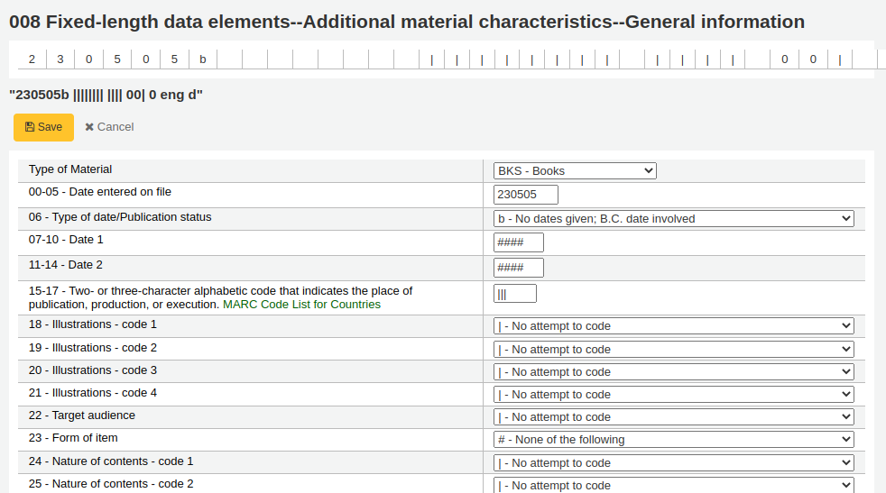
备注
008 字段的 “载体类型”决定了投标区第 6 个字符。
全部完成，点击上方的“保存”按钮，可以选择保存且浏览刚完成的书目记录或者继续添加/编辑记录的实体文献其他信息

选择“保存且浏览记录”进入刚完成编目的记录
选择“保存且编辑文献”开始添加|编辑刚保存书目记录的文献馆藏信息
选择“保存且继续编辑”保存当前工作且继续编辑书目记录信息
如果添加重复记录，系统会在保存前提示
备注
系统查重会优先查询 ISBN，没有 ISBN 则进行题名和作者的组合查询。
如果必备或重要字段/子字段未填写，系统将给出警告。点击“到该字段”，系统将自动跳到问题字段并修改。
如果当前显示已经滚动，这时需要再次查看警告，点击工具条右侧的“错误”按钮即可看到。
备注
重要字段或子字段未填写不会阻止保存。
只有必备字段或子字段才会阻止保存。
高级编目编辑器
要使用高级编目编辑器需要启用 EnableAdvancedCatalogingEditor 参数。
注记
此功能目前不支持 UNIMARC 或 NORMARC 的定长字段。
在高级编辑器内，一旦打开一条空的书目框架记录或通过 Z39.50 导入一条记录，则会以表单形式出现并且可以继续编目

使用左侧的检索框可以执行 Z39.50 检索

从这些 Z39.50 检索结果中通过点击右侧链接可以查看 MARC 记录

点击“导入”将记录导入编辑器进行编辑

注记
在高级编辑器内加入字段时，需要用下划线代替空格，并在其前后加入空格。
注记
在第一个子字段分割符前加入一个空格，但是字段的其他子字段分割符前不需要。
在编辑器下方有来自国会图书馆的关于正在编辑字段的帮助。如果你的 MARC 格式错误，你会看到高亮的红色。只用键盘功能编辑记录，快捷键简化了必要的命令。
剪贴板便于字段间的复制和粘贴。查看下面的图表了解剪贴板的快捷键使用。
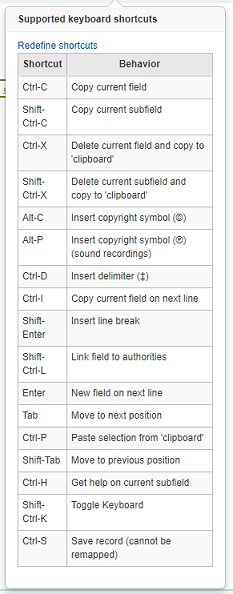
高级编目快捷键
下列快捷键可用于高级编目模块以节省时间和点击次数。
快捷键 |
操作 |
|---|---|
Ctrl-C |
复制当前字段 |
Shift-Ctrl-C |
复制当前子字段 |
Ctrl-X |
删除当前字段并将其复制到“剪贴板” |
Shift-Ctrl-X |
刪除当前的子字段并复制到“剪贴板” |
Alt-C |
插入版权符号 （©） |
Alt-P |
插入版权符号（©）（音频资料） |
Ctrl-D |
插入分隔符号（‡） |
Ctrl-I |
复制当前字段到下一行 |
Shift-Enter |
插入换行符 |
Shift-Ctrl-L |
链接字段到规范记录 |
Enter |
移动到下行新字段 |
Tab |
移动到下个位置 |
Ctrl-P |
从“剪贴板”粘贴 |
Shift-Tab |
移动到前一个位置 |
Ctrl-H |
寻求当前子字段的帮助 |
Shift-Ctrl-K |
切换键盘 |
Ctrl-S |
保存记录（不能重新映射） |
高级编目虚拟键盘

一个用于添加变音符号和其他符号的虚拟键盘。使用快捷键 Shift-Ctrl-K 显示键盘。”键盘布局”按钮在高级编辑器顶部显示，通过该按钮可以调整不同语言的不同虚拟键盘布局。
高级编辑器的宏命令
录制新的宏命名：
选择“宏……”按钮
在弹出窗口内，选择“新增宏命令……”，在再次弹出窗口中输入新宏命令的名字，然后选择确定。
现在点击小数字 1 的右侧，然后输入宏命令的第一行。对于多行宏命令，例如多段的宏，点击回车键光标在小数字 2 后面出现，然后输入第 2 行，以此类推。
宏命令会自动保存。当完成输入后使用”x”关闭窗口，或者选择一个宏命令运行与正在编辑的记录，或者选择另一个宏命令运行。
编辑既有宏命令：
选择“宏……”按钮
在弹出窗口内选择想要编辑的宏命令，然后修改。
当完成修改选择“x”关闭窗口时系统自动保存，或者选择一个宏命令在当前记录上运行，或者选择其他宏命令运行。
宏命令语言的基本语法：
new 500=‡aEdited with Rancor
新增 500 字段，该字段带有 ‡a 子字段，子字段内容为 “Edited with Rancor”。
245c= by J.K. Rowling.
需要时创建第一个子字段 ‡c 内容为“by J.K.Rowling”的 245 字段。
082a={084a}
设置第一个 082 字段的 ‡a 子字段（需要时新增子字段）与第一个 084‡a 内容相同。
indicators=_1
设置最后涉及的字段（本例中为 082 ）指示符为“_”和“1”。
new 090a=Z674.75.W67
新增第一个 090 字段（仅限已有字段）的 ‡a 子字段内容为 Z674.75.W67。
new 090a at end=Z674.75.W67
同上。
new 245b after a= a tale of might and magic /
在第一个 ‡a 子字段后面新增一个在新增 ‡b 子字段，并且将其内容设置为“ a tale of might and magic /”。
delete 245b
删除 245 字段的第一个 ‡b 子字段
导入记录
在 Koha 系统中有时需要通过文件导入书目和规范 MARC 记录。导入文件可能是 MARC 或者 MARCXML 格式。
Koha 导入记录需要两步。
首先到 导入记录平台，准备导入记录，然后导入记录到缓冲库。
然后来到 导入准备或缓存的文件 ——将其从缓存库导入目录。
导入缓存记录
在这里： 更多 > 編目 > 导入 > 导入缓存记录
首先，在你的计算机上找到要导入的 MARC 文件
- 接下来，你会看到关于记录匹配和文献的相关选项
导入
配置预置值：如果你已经设置了缓存配置，可以通过下拉菜单选择相近的配置
配置用于缓存设置表单的预设值。
你可以通过下面的各个选项的设置并在最后给定一个文件名从而创建一个配置文件。下次再导入记录时就有配置文件可用了。
注释此文件：为了区别你上传的文件可以用 ‘管理缓存记录’ 工具进行注释
记录类型：选择此文件内的记录类型，是书目还是规范记录
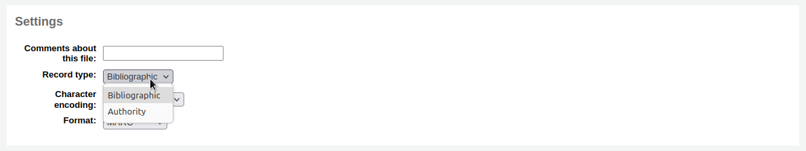
字符编码：选择文件的字符编码
格式：选择文件的 MARC 格式

使用 MARC 修改模板修改记录：如果你想要使用 MARC 修改模板 修改导入数据请选择
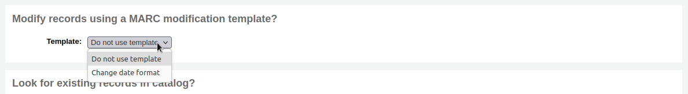
选择是否检索匹配记录
记录匹配规则：选择用来检测目录是否已经存在的规则。
备注
你可以在管理区设置 记录匹配规则
备注
当使用 ISBN 匹配规则时 Koha 会进行精确匹配。如果你对 ISBN 匹配不满意，可以修改 AggressiveMatchOnISBN 参数为“Do”，然后重新导入进行匹配。
如果匹配上记录的操作：如果发现匹配记录选择的操作
用新记录覆盖旧记录：如果导入的记录比现有记录更完整则选择此选项，或者你使用外部工具（例如MarcEdit）对数据做了修改，需要覆盖原记录
新增导入记录：此选项会保留原有记录的同时新增传入记录，所以最终你可能就会有了双份记录
忽略导入记录（其数据可能还需要处理）：如果你不想覆盖已有记录选择此选项
Action if no match is found: choose what to do with records that are unique
新增导入记录：如果你想导入你的书目中没有的记录（例如新的题名）时选择此选项
忽略导入记录：如果你不想新增你的目录中没有的记录时选择此选项（例如，如果你只是想覆盖已存在记录而不想新增任何东新时）
检测记录数据内嵌文献？：选择是否导入 MARC 记录中内嵌（952 字段）的文献数据（如果你加载的文件是一个书目文件）
总是新增文献：不论匹配状态如何总是新增文献
只有目录匹配才新增文献：只在已有目录记录中添加文献
Add items only if no matching bib was found: this will only add items to the new records you’re importing, not the ones that already exist
Replace items if a matching bib was found: the match will look at the itemnumbers and barcodes to match on for items and will only replace existing items.
备注
文献号优先于条码号
忽略文献：不添加任何文献
保存配置：可以设置到文件以备后用
Click ‘Stage for import’
记录缓存后会在后台继续运行。进度条会显示当前运行完成状态。
点击“查看排队任务细节”可以看到缓存概况
你会看到导入 MARC 的确认信息
文件中的记录数
错误 MARC 记录数
缓存记录数
匹配已有书目的记录数
缓存文献数
处理完成，点击“查看批处理”使用 管理缓存记录工具。
If these records are to be used in acquisitions, you can stop here and add these records to a basket by ordering from a staged file
管理缓存记录
在这里： 更多 > 编目 > 导入 > 管理缓存记录
一旦已经 :ref:`缓存了导入记录<stage-marc-records-for-import-label>`就可以用此工具完成导入。
从缓存文件列表点击想要完成导入的文件名
注意那些已经导入的记录“状态”会显示
备注
如果你是直接从 缓存记录导入工具 转入到这里就不会看到这个缓存文件列表，你会看到文件的概况
导入文件概况会显示可修改的匹配规则选项
下面的概况选择批记录导入使用的框架
Choosing a framework other than ‘Default’ isn’t necessary, but it’s helpful for running reports.
Below the framework selection there will be a list of the records that will be imported
Review your summary before completing your import to make sure that your matching rule worked and that the records appear as you expect them to
Matches will appear with info under the ‘Match details’ column
and when clicking the ‘View’ link under ‘Diff’ you can see the difference between versions.
For each match, you can choose to ignore the match by selecting the ‘Ignore matches’ radio button. If more than one matching record was found, they will all be listed and you can choose with which to match your incoming record.
If ‘Ignore matches’ is selected, the action chosen in ‘Action if no match is found’ from the staging step will be applied.
备注
Here are the different behaviors depending on the ‘Action if matching record found’ choice from the staging step and if a match is selected or if ‘Ignore matches’ is selected.
Action if matching record found
Match selected
‘Ignore matches’ selected
Replace existing record with incoming record
Incoming record replaces selected matching record
‘Action if no match is found’ is applied
Add incoming record
Incoming record is added
Incoming record is added
Ignore incoming record
Incoming record is ignored
‘Action if no match is found’ is applied
Click ‘Import this batch into the catalog’ to complete the import
The record importation will be treated as a background job.
你会看到导入 MARC 的确认信息
Number of records added: new records added
Number of records updated: existing records replaced with the incoming ones
Number of records ignored: records that were ignored due to the matching rule
Number of items added: new items added
Number of items replaced: existing items updated with the incoming ones
Number of items ignored because of duplicate barcode: items that were ignored because the barcode already exists in the database
Once your import is complete a link to the new records will appear to the right of each title that was imported
You can undo your import by clicking the ‘Undo import into catalog’ button
Records imported using this tool remain in the ‘reservoir’ until they are cleaned either through the ‘Clean’ button in the Staged MARC record management home page (see below) or through the cleanup_database cronjob. Reservoir records will appear when searching the catalog from the cataloging module

To manually clean items out of the ‘reservoir’:
Visit the main screen of the manage staged MARC records tool
To clean a batch, click the ‘Clean’ button to the right
You will be presented with a confirmation message

Accept the deletion and the records will be removed from the reservoir and the status will be changed to ‘cleaned’
新增分析紀錄
有時圖書館需要以分析編目技術，處理期刊裡的論文或專書裡的章節，供讀者使用。分析編目可編目期刊、報紙或期刊等書目記錄的部份內容，包括論文、章節、段落等。分析編目時，每個題名都有獨立的書目紀錄，但並未脫離主館藏的實體。詳情見中國編目規則第十四章分析與 AACR2 第 13 章。
If you would like to catalog analytic records there are two options. One is to use the Easy Analytics function; the other is the Analytics enhanced workflow.
簡易分析
The easy analytics feature makes linking analytic records together easier. The first thing you need to do is set the EasyAnalyticalRecords preference to ‘Show’ and the UseControlNumber preference to ‘Don’t use.’
編目分析紀錄後 (詳情見 新增記錄)，在標準檢視模式下點選 ‘編輯’，並選擇 ‘連結至主館藏’

提示鍵入館藏的條碼，以連結至紀錄。

鍵入館藏條碼並按下 ‘選擇’ 鈕後，出現確認訊息。

此紀錄的773欄位鍵入完整的連結。

檢視與主紀錄連結的所有館藏、搜尋紀錄、勾選左方的 ‘分析’ 分頁並分析每個條碼，顯示在 ‘使用於’ 欄。

注记
在此畫面按 ‘新增分析’ 也可新增分析紀錄
在正常檢視下，按紀錄上方的 ‘顯示分析’ 連結，可看到該紀錄的分析。

檢視分析記錄時，從 ‘分析’ 分頁館藏表的 ‘主記錄’ 欄裡，也可看到連結至主記錄的分析。

分析強化工作流程
To use the enhanced workflow method of adding analytics, the first thing you need to do is set the EasyAnalyticalRecords preference to ‘Don’t show’ and the UseControlNumber preference to ‘Use.’
編好原始記錄後 (詳情見 新增記錄)，從標準檢視裡勾選 ‘新增’ 並選擇 ‘新增子記錄’。

開啟空白的記錄供編目之用。只需填入 773 欄位的內容建立連結就可以儲存。

現在主機記錄的 ‘顯示分析’ 連結將使用主機記錄控制號 (001)來搜尋系統中所有類型為 ‘專著部件’ 或 ‘系列部件’ (前導位置 7) 的記錄，其773分欄w包含主機記錄控制號。
編輯分析
如果你錯誤地連結了一個分析記錄，你可以通過編輯分析記錄（而不是主機記錄）來刪除該連結。
要做到這點，可進入分析記錄，點擊 ‘編輯’ 按鈕。對 `UseControlNumber`只需編輯或刪除相應的773。
如果使用 `EasyAnalytics`來選擇 ‘編輯館藏’；在每個館藏的左邊，你會看到兩個選項。

勾選 ‘編輯主紀錄’ 將允許您從主紀錄編輯館藏。
勾選 ‘不連結’，將移除 773 欄位以及分析與主紀錄的連結。
編輯記錄
從編目頁面的搜尋結果，點選 ‘作用’ 鈕並選擇 ‘編輯書目’ 就能夠編輯記錄

或在書目記錄裡按編輯鈕並選擇 ‘編輯記錄’

將以 MARC 編輯器打開此紀錄

另一個選項是經由 Z39.50 搜尋，以其他圖書館較完整的記錄覆蓋本館原來的記錄。從 ‘編輯’ 選單裡，選取 ‘經由 Z39.50 覆蓋原記錄’。

選定之後，進入 Z39.50 搜尋視窗，搜尋其他圖書館的紀錄。
編輯之後 (任何方式均可) 可按下編輯器左上方的 ‘儲存’ 鈕。
Batch record modification
Get there: More > Cataloging > Batch editing > Batch record modification
This tool is used to edit batches of bibliographic and authority records using MARC modification templates. Before visiting this tool you will need to set up at least one MARC modification template.
Record type: choose whether you’re editing bibliographic or authority records
Enter the biblionumbers or authids of records to be edited, in one of three ways
Upload a file of biblionumbers or authids
Use a list;
Or enter the numbers (one per line) in the box provided.
MARC modification template: finally choose the MARC modification template to use to edit these records.
Once you’ve entered your criteria click ‘Continue’
You will be presented with the list of records that will be edited. Next to each one is a checkbox so you can uncheck any records you would rather not edit at this time.
Clicking ‘Preview MARC’ will allow you to see what edits will be made when you finalize the edit.
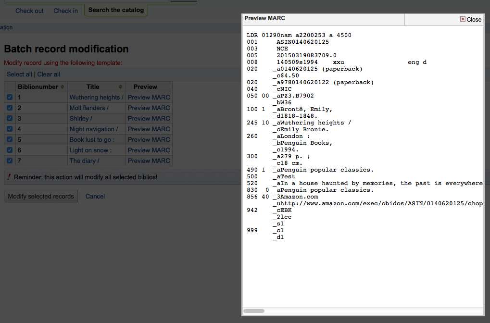
Once you’re sure everything is the way you want you can click the ‘Modify selected records’ button and your records will be modified.
MARC modification templates
Get there: More > Cataloging > Batch editing > MARC modification templates
The MARC modification templates system gives Koha users the power to make alterations to MARC records automatically while staging MARC records for import or making batch record modifications.
This tool is useful for altering MARC records from various vendors or sources. The system essentially allows one to create a basic script using actions to copy, move, add, update and delete fields.
Click on ‘New template’ (a template can be made up of one or more actions), enter a name and click ‘Submit’.
Optionally, you can copy an existing template by choosing the template to copy in the ‘Duplicate a template’ drop-down menu.
Next, you can add actions to the template. Click on ‘New action’.
A ‘Add a new action’ box will appear that you can use to specify what exactly you want to do.
For example if you’re loading in a batch of files from your EBook vendor you might want to add the biblio item type of EBOOK to 942$c.
Choose ‘Add new’
Enter the field 942 and subfield c
Enter the value of ‘EBOOK’ (or whatever your ebook item type code is)
Provide a description so you can identify this action later
Click ‘Add action’
备注
If you wish to update the values in an existing field choose the option ‘Update existing or add new’. This will update existing values where found and add a new field if one doesn’t exist.
Each action can also have an optional condition to check the value or existence of another field. For example you might want to add the call number to the item record if it’s not already there.
备注
Editing item fields only works when using the template when staging records. Once records are in Koha, the item is ‘separated’ from the record and can only be edited using the batch item modification tool
Choose ‘Copy’
Decide if you want to copy the first occurrence or all occurrence of the field
Enter the field 090 (or other bibliographic call number field) and subfield a to copy
Enter the 952 field and o subfield to copy to
Choose ‘if’
Enter the 952 field and o subfield
Choose “doesn’t exist”
Provide a description so you can identify this action later
Click ‘Add action’
The move, copy, and copy and replace actions support regular expressions, which can be used to automatically modify field values during the copy or move. An example would be to strip out the ‘$’ character in field 020$c.
Choose ‘Copy and replace’
Decide if you want to copy the first occurrence or all occurrences of the field
Enter the field 020 and subfield c to copy
Enter the 020 field and c subfield to copy to
Check the ‘RegEx’ box and enter your regular expression (in this case s/\$// )
Choose ‘if’
Enter the 020 field and c subfield
Choose “matches”
Check the ‘RegEx’ box and enter your regular expression (in this case m/^\$/ )
Provide a description so you can identify this action later
Click ‘Add action’
备注
The value for an update can include variables that change each time the template is used. Currently, the system supports two variables, __BRANCHCODE__ which is replaced with the branchcode of the library currently using the template, and __CURRENTDATE__ which is replaced with the current date in ISO format ( YYYY-MM-DD ).
You could also use regular expressions to add your library’s proxy URL in front of links in your MARC record.
Choose ‘Copy and replace’
Decide if you want to copy the first occurrence or all occurrences of the field
Enter the field 856 and subfield u to copy
Enter the 856 field and u subfield to copy to
Check the ‘RegEx’ box and enter your regular expression (in this case s/^/PROXY_URL/ )
Provide a description so you can identify this action later
Click ‘Add action’
When choosing between ‘Copy’ and ‘Copy and replace’ keep the following example in mind:
245 _aThe art of computer programming _cDonald E. Knuth.
300 _aA_exists _bB_exists
If we apply action (a) Copy the whole field 245 to 300, we get:
245 _aThe art of computer programming _cDonald E. Knuth.
300 _aA_exists _bB_exists
300 _aThe art of computer programming _cDonald E. Knuth.
If we apply action (b) Copy the subfield 245$a to 300$a, we get:
245 _aThe art of computer programming _cDonald E. Knuth.
300 _aThe art of computer programming _bB_exists
Once your actions are saved you can view them at the top of the screen. Actions can be moved around using the arrows to the left of them.
Actions will be done in the order they appear. Depending on your actions the order may be very important. For example you don’t want to delete a field before you copy it to another field. You can use the arrows to move actions up or down the list
The up arrow will move the action up one position
The up arrow with a line at the top will move the action to the first position
The down arrow with a line at the bottom will move the action to the last position
The down arrow will move the action down one position
Once your template is saved you will be able to pick it when using the Stage MARC records for import tool or when using the batch record modification tool.
複製記錄
無法從 Z39.50 取得記錄。祗好複製一個類似的記錄，並編輯幾個必要的欄位產生新的紀錄。從書目錄的 ‘編輯’ 選單裡，按 ‘編輯成新記錄 (複製)’ 就可以做到。
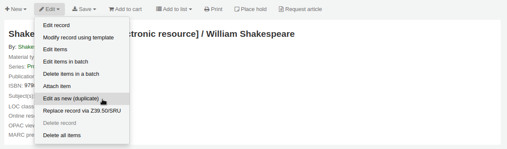
將從原來的書目紀錄複製所有的欄位及其值，開啟成新的 MARC 紀錄。
Edit as needed and save.
备注
This will not change the original record.
新增檔案掛載於紀錄
藉由幾個設定可以上傳檔案給 Koha。
需要系統管理員設定 ‘upload_path’ 變數指定檔案的儲存地
從關於 Koha > 系統資訊可查看上傳路徑。若有錯誤則在此顯示。
You will want to be sure that your OPACBaseURL system preference is set appropriately
在一個 (或多個) 框架 中新增 upload.pl 於 856$u 內
設定後就可以正常編目。在 856$u 旁可看到外掛圖示點選後可開啟上傳或搜尋視窗

從這個選單點選瀏覽找到檔案並上傳，或可搜尋以搜尋盒上傳的檔案。從搜尋結果選擇上傳的檔案。
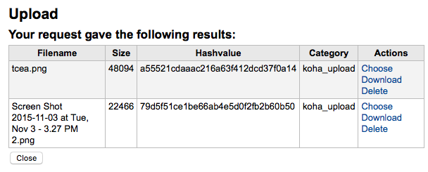
選定的檔案將出現在 MARC 記錄內及詳細顯示的連結。
注记
在瀏覽器直接顯示 PDF 檔案，其他類型檔案則會被下載。
Adding cover images
Several free and paying services are integrated with Koha to provide cover images for your catalog, such as Amazon, Baker and Taylor, Google books, NovelList Select, Open Library, and Syndetics. Check the corresponding system preferences to enable the service of your choice.
There are other options such as a Coce image cache server, or having remote cover images with custom URLs.
警告
If you enable more than one service, you will have multiple cover images in your records.
Most of these services use the ISBN of the record to fetch the cover image from the provider.
Finally, you can upload your own images to your records with what is called Local cover images in Koha.
警告
Make sure you are respecting copyright when using images.
Adding a single local cover image
Before adding local cover images, make sure either the OPACLocalCoverImages system preference and/or the LocalCoverImages system preference is set to ‘Show’.
To upload local cover images staff need the upload_local_cover_images permission.
In a bibliographic record, choose ‘Upload image’ from the edit menu to add your cover image.
Drag and drop the image to the area, or click on ‘Drop files here or click to select a file’ a select the image file on your computer.
警告
Koha does not have a maximum file size limit for this tool, but the web-server (such as Apache) may limit the maximum size of uploads (ask your system administrator).
If the AllowMultipleCovers system preference is set to ‘Allow’, you will have the choice to replace existing covers or not. If the system preference is set to “Don’t allow”, the image will replace existing cover images for this record.
备注
Where there are multiple images for a record they will display left to right (then top to bottom, depending on screen size) in the order they were uploaded. The image on the left (the first one uploaded) is used as a thumbnail cover in search results and on the details page. There is no way to reorder cover images uploaded in this way, so be sure to upload them in the order you’d like them to appear.
Click ‘Process images’
Alternatively, you can access the cover image upload tool itself in Cataloging > Tools > Upload local cover image. You will then need to specify the biblionumber of the record for which you are uploading the image.
备注
The biblionumber or bibliographic record number is not the same as the barcode, it is the system-generated number assigned by Koha to each bibliographic record. You can find the biblionumber in various place, namely:
At the end of the URL in the address bar of your browser when on the record details page. The URL will look something like
In the MARC tab of the record details page in the staff interface
Adding a batch of cover images
The tool to upload cover images also allows batches of images to be uploaded in a ZIP file.
To upload a batch of images:
Create a folder with the images to upload in it
Create a text file (*.txt) named either datalink.txt or idlink.txt listing the biblionumber followed by the image name for each image, one per line. For example:
- ::
506,2gentlemen.jpeg 779,asyoulikeit.jpg 138,selected-poems-oscar-wilde.jpg 41,sonnets.jpg 499,3rdhenry6.jpg 787,macbeth.jpg 102,sonnets2.jpg
警告
Make sure there are no extra lines or characters in the text file.
Create a ZIP file that includes all the images to upload and the text file
In Koha’s staff interface, go to the upload cover image tool in Cataloging > Tools > Upload local cover image, and drag and drop or select the ZIP file from your computer
The file type ‘ZIP file’ should be selected
If the AllowMultipleCovers system preference is set to ‘Allow’, you will have the choice to replace existing covers or not. If the system preference is set to “Don’t allow”, the image will replace existing cover images for this record.
Click ‘Process images’
You are presented with a summary of the upload
备注
The source image is used to generate a 140 x 200 px thumbnail image and a 600 x 800 px full-size image. The original sized image uploaded is not kept by Koha.
In the staff interface, the cover images appear in the search results, in the record details page on the right of the title, and in the ‘Images’ tab in the holdings table at the bottom.
In the OPAC, the cover images appear in the search results, in the record details page on the left of the title, and in the ‘Images’ tab in the holdings table at the bottom.
Deleting a local cover image
To remove a cover image, you need the upload_local_cover_images permission.
Click ‘Delete image’ below the image in the ‘Images’ tab in the staff interface.
合併紀錄
To merge bibliographic records together,
Perform a search in the catalog to find the records that need to be merged.
Check the boxes next to the duplicates to select them.
Click “Edit” and choose the “Merge records” option
备注
Alternatively, you can go through the cataloging module to merge bibliographic records.
After searching for the records in the cataloging search and selecting the records to be merged, click the ‘Merge selected’ button at the top of the list.
Choose which record to keep as the primary record, the other records will be deleted after the merge
Choose which framework to use for the newly merged record
You will be presented with the MARC for all of the records, each accessible by a tab labeled with the biblionumber for this record. By default the entire first record will be selected.
Uncheck the fields you don’t want in the final (destination) record from each source records
Check the fields you want to add in the final (destination) record
备注
Should you try to add a field that is not repeatable two times (like choosing the 245 field from both records) you will be presented with an error
备注
If mandatory fields are missing in the destination record, Koha will not merge the records. You must select a value for mandatory fields.
If important fields are missing in the destination record, Koha will warn you, but will still merge the records.
記錄之下可鍵入待合併的欄位。藉以控制在合併確認頁面出現的欄位：
未鍵入資料則出現確認書目號的訊息
If you enter fields you will see those on the confirmation page.
备注
You can set defaults for this report with the MergeReportFields system preference.
Once you have completed your selections click the ‘merge’ button.
The primary record will now contain the data you chose for it, as well as all of the items and acquisition information from both bibliographic records, and the second record will be deleted.
Merging bibliographic records with lists
Another way to merge together duplicate bibliographic records is to add them to a list and use the merge tool from there.
Go to Lists and click on the list title to view the list
Select the records to be merged
Click the ‘Merge selected’ button at the top of the list
Once you have selected the records to merge together the process is the same as merging via cataloging.
刪除紀錄
To delete a bibliographic record, click the ‘Edit’ button and choose ‘Delete record’.
Bibliographic records can only be deleted once all items have been deleted. If you try to delete a bibliographic record with items still attached you will see that the delete option is grayed out. (See the Deleting items section of this manual to learn how to delete items.)

Batch deleting records
Get there: More > Cataloging > Batch editing > Batch record deletion
This tool will take a batch of record numbers for either bibliographic records or authority records and delete all those records and any items attached to them in a batch.
First, you need to tell the tool if you’re deleting bibliographic or authority records.
Next, you can:
load a file with biblionumbers or authids;
use a list;
or enter the list of numbers in the box provided.
Once you submit the form you will be presented with a summary of the records you are trying to delete.
If a record you want to delete can’t be deleted, it will be highlighted.
Check the records you want to delete and click the ‘Delete selected records’ button to finish the process.
You can also use the links at the top of the table to select only the records without items, holds, or subscriptions.
Catalog concerns
Reporting concerns about bibliographic records
If the CatalogConcerns system preference is enabled, staff will be able to report concerns regarding specific bibliographic records.
To report a new concern,
In the bibliographic record’s detail page, click the ‘New’ button and choose ‘New catalog concern’.
Fill in the concern form.
Title: enter a title describing succinctly the problem.
Please describe your concern: enter details about the problem, being the more descriptive possible so that the staff member who receives this is able to replicate and see the problem.
An example of what is expected in the description is provided in the field:
**Describe the concern** A clear and concise description of what the concern is. **To Reproduce** Steps to reproduce the behavior: 1. Go to '...' 2. Click on '....' 3. Scroll down to '....' 4. See error **Expected behavior** A clear and concise description of what you expected to happen.
备注
This text is customizable in the HTML customizations tool, by changing the ‘CatalogConcernTemplate’ entry.
The text at the bottom of the form (“Please describe your concern clearly…”) is also customizable in the HTML customizations tool, by changing the ‘CatalogConcernHelp’ entry.
Click ‘Submit’.
This will send an email to the cataloging team to notify them that a new concern has been created. The email will be sent to the email address in the CatalogerEmails system preference. The email sent is the TICKET_NOTIFY notice, which can be customized in the Notices and slips tool.
An email will also be sent to the reporter to notify them that the concern has been received. The email sent is the TICKET_ACKNOWLEDGE notice, which can be customized in the Notices and slips tool.
Concerns reported about this record are visible in the ‘Concerns’ tab.

All concern tickets will be visible in the catalog concerns report.
Newly opened concern reports will also appear in the notification section at the bottom of the staff interface main page.

Managing catalog concerns
When staff or patrons report concerns about bibliographic records, all concerns will be accessible through the catalog concerns report.
Get there: More > Cataloging > Reports > Catalog concerns
备注
This report will only be visible if either the CatalogConcerns system preference or the OpacCatalogConcerns system preference are enabled.
备注
To access this page, staff members need the edit_catalogue permission.
From this report, you can see all concerns, ordered by date, with the name of the reporter, the details of the concern, the title of the bibliographic record, the status (open or resolved), and if resolved, the date and name of the staff member who managed it.
备注
By default, all concerns are shown. If needed, you can click on ‘Hide resolved’ at the top of the page to hide concerns that have already been resolved.
Click ‘Show all’ to return to the full table.
To see the details of a concern, either click the text in the ‘Details’ column, or click the ‘Details’ button in the ‘Actions’ column.

From this view, you can enter a comment in the ‘Update’ field.
To simply add the comment as an update, click the ‘Comment’ button.
If this concern is resolved, click the ‘Resolve’ button.
If ‘Notify’ is checked, the reporter will receive an email indicating that the concern was updated. The email sent for an update is the TICKET_UPDATE notice, and the email sent when the concern is resolved is the TICKET_RESOLVE notice, both of which can be customized in the Notices and slips tool.
館藏紀錄
在 Koha 裡，每筆書目記錄可以有多筆館藏記錄。這些館藏記錄也被稱為館藏。每個館藏包括圖書館擁有該館藏的物理資訊。
新增館藏
儲存書目記錄後，進入空白的館藏資訊，可以新增附屬於該書目紀錄的館藏。從編目搜尋結果，勾選 ‘新增/編輯館藏’ 即可
或者勾選書目記錄的 ‘新增’ 再選新增 ‘館藏’
將顯示館藏編輯表單：
If you already have item templates, you can choose the template to apply and click ‘Apply template’. This will pre-fill the item form with the template values.
若打算借出館藏，以下欄位應鍵入新的館藏：
-
在這個欄位可以使用 編目外掛’呼叫號碼瀏覽器’ (cn_瀏覽器.pl)。啟用後可在欄位右方看到 … 之類的內容。點選後開啟索書號瀏覽視窗紅色表示索書號使用中，若為淡綠色則可以使用索書號。

-
借出的館藏被申報為 ‘遺失’ 時，向讀者收取的費用
可以在 框架 裡，把這些欄位設為必備，就會以紅色標示為 ‘必備’ 標籤。必須鍵入資料才能儲存它。
备注
To make item subfields required in a framework, edit the 952 field in the framework editor.
您可以直接從任何欄位的新增或編輯館藏視窗新增容許值, 連結至容許值項目, 如書架(分欄$c)或合集代碼(分欄$8).
開始輸入容許值說明，如果沒有找到匹配的，你會看到 ‘(選擇建立)’ 的選項。
點擊該選項，會顯示一個彈出窗口，你可以建立新的容許值。
The authorized value category will be pre-populated from the field you are using, for example LOC for Shelving location, CCODE for Collection code. Take care when choosing your authorized value code. Refer to the notes on adding new authorized values for the correct format of these codes. Use the Description field for the actual value that will be displayed

你可以用同樣的方式從書目和權威記錄中新增容許值。
备注
你必須有 管理_授權_值 管理權限才能從編目中新增容許值。
在新增表單下有 3 個鈕可供新增館藏。
‘新增館藏’ 時祗新增一筆館藏
‘新增 & 複製’ 將新增該館藏，並以相同的值填入新的表單供編輯
‘Add multiple copies of this item’ will ask how many copies and will then add that number of items adding +1 to the barcode so each barcode is unique
‘Save as template’ will save this item as an item template to reuse later.
警告
Saving as template will not save the item. It will only create the template.
送出後水，新增的館藏將顯示在新增表單上
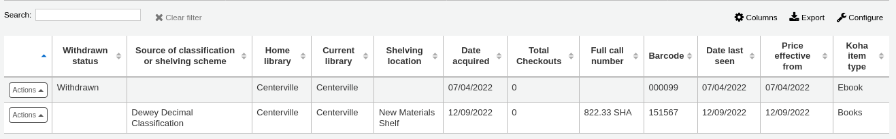
备注
您可以在管理模組的 :ref:`’欄組態’<column-settings-label>`部份, 自定義此表的列(table id: Items Editor)。
Your items will also appear below the bibliographic details on the record details page, in the ‘Holdings’ tab.
If the SpineLabelShowPrintOnBibDetails system preference is set to ‘Show’, there will be a button to print a quick spine label next to each item.
按下 ‘啟用篩選器’ 就可篩選館藏表單的內容。將在頁面上方出現一列可以鍵入篩選的內容。
Adding and using item templates
You can create item templates to share and reuse in order to easily fill out the new item form.
备注
Anyone who has the edit_items permission can create and share item templates, and delete their own templates.
However, the manage_item_editor_templates (or superlibrarian) permission is needed to manage item templates created by others.
Creating a new item template
To create an item template,
Go to add a new item
Fill out the item form with the values you want to add to the template
Instead of saving the item, click the ‘Save as template’ button
Choose ‘Save as new template’
Enter a template name
Choose if you want this template to be shared with all other catalogers
Click ‘Save’
Updating an existing template
To edit an existing template,
Go to add a new item
Choose the template to update at the top of the form

Click ‘Apply template’
Change the values as needed
Click the ‘Save as template’ button.
Choose the template to update
Choose if you want this template to be shared with all other catalogers
Click ‘Save’
Using a template
To use a template,
Go to add a new item
Choose the template to update at the top of the form
Click ‘Apply template’
If checking ‘For session’, all new items will be based on this template, unless otherwise specified
Change the values as needed
Save the item
Deleting a template
To delete a template,
Go to add a new item
Choose the template to delete at the top of the form
Click ‘Delete template’
編輯館藏
館藏曾被多方編輯。
從書目紀錄內按 ‘編輯’ 與 ‘編輯館藏’

打開館藏清單後，可按下館藏左方的 ‘作業’ 鈕，選擇 ‘編輯’ 並開始編輯該館藏。

在館藏內按 ‘館藏’ 分頁旁的 ‘編輯館藏’
將打開館藏編輯器供編輯之用

按 ‘編輯’ 再按 ‘批次編輯館藏’
將彈出 批次修改館藏工具 編輯此筆書目記錄的所有館藏。
You can also enable StaffDetailItemSelection to have checkboxes appear to the left of each item on the detail display. You can then check off the items you would like to edit and click ‘Modify selected items’ at the top of the list.

按館藏分頁內每個館藏右方的 ‘編輯’ 鈕

館員介面的搜尋結果，也有編輯館藏的連結

最後您可使用 批次修改館藏 工具
快速更新館藏狀態
Circulation staff often need to change the status of an item to Lost or Damaged. This doesn’t require you to edit the entire item record. Instead, clicking on the item barcode on the checkout summary or checkin history will bring you to an item summary. You can also get to the item summary by clicking on the Items tab to the left of the bibliographic record’s detail page.
From this view, you can mark an item lost by choosing a lost status from the pull down and clicking the ‘Set status’ button. Same applies to the damaged and withdrawn statuses.

複製館藏
按下編輯館藏頁面每筆館藏左方的 ‘行動’ 鈕就可複製該館藏
從這裡可選擇 ‘複製’ 館藏把選定的館藏複製。
Batch editing items
Get there: More > Cataloging > Batch editing > Batch item modification
This tool will allow you to modify a batch of item records in Koha.
From the tool, choose to either upload a file of barcodes or itemnumbers, or scan item barcodes one by one into the box below the upload tool. You can also decide the items edited should be populated with the default values defined in the default framework.
Once the file is uploaded or the barcodes listed, click ‘Continue.’
You will be presented with a summary of the items you want to modify. From here, you can uncheck the items you don’t want to modify before making changes in the form below. You can also hide columns you don’t need to see to prevent having to scroll from left to right to see the entire item table. The holds column displays a count of the current holds for the item.
备注
To uncheck all items that are currently checked out you can click the ‘Clear on loan’ link at the top of the form.
Using the edit form, choose which fields to make edits to. By checking the checkbox to the right of each field you can clear the values in that field for the items you are modifying.
You can also click the ‘RegEx’ link to change the text field to a regular expression substitution. This is used to change only a part of a text string.

Once the changes are made, the job will be enqueued in the background jobs.
To see the edited items, click on ‘View detail of the enqueued job’.
Batch editing items from the bibliographic record
You can also edit items on one bibliographic record in a batch by going to the bibliographic record and clicking Edit > Edit items in batch
This will bring you to the same batch item modification tool as above.
Batch editing items from a report
The batch item modification tool is also available from reports results when the results contain itemnumbers.
When the report contains the itemnumber, the option ‘Batch operations with X visible records’ will automatically appear. This option contains batch item modification ans batch item deletion.
By default, only 20 results are shown when running reports, therefore, the batch modification will only be done on 20 results. If you have more results that you want to edit in a batch, make sure to change the number of results per page before choosing the batch operation.
Automatic item editing by age
Get there: More > Cataloging > Automation > Automatic item modifications by age
This tool allows you to update item specific fields when an item reaches a certain age.
备注
Staff need the items_batchmod permission to access this tool.
备注
The settings in this tool will be acted upon by the corresponding cron job.
If you haven’t created any rules, you will see the option to ‘Add rules’ on the page. Click this button to create rules.
If you have rules already there will be a button that reads ‘Edit rules’. To create a new rule click the ‘Edit rules’ button at the top of the page.
You will be brought to a page where you can edit existing rules or create a new rule.
Click ‘Add rule’.
Fill out the form that appears to set the new rule:
Age in days: the age in days at which the item will update
Age field: the field on which the age is based
items.dateaccessioned (default): date of acquisition of the item; in MARC21, it is normally mapped to 952$d
items.replacementpricedate: date the replacement price is effective from; in MARC21, it is normally mapped to 952$w
items.datelastborrowed: date the item was last checked out; in MARC21, it is normally mapped to 952$s (not editable manually)
items.datelastseen: date of the last transaction made on the item; in MARC21, it is normally mapped to 952$r (not editable manually)
items.damaged_on: date on which the damaged status was set (not editable manually)
items.lost_on: date on which the lost status was set (not editable manually)
items.withdrawn_on: date on which the withdrawn status was set (not editable manually)
Conditions: what criteria is needed to trigger the update
Choose the field to check from the dropdown menu
Enter the value the field should have to trigger the update
If you need more than one condition, click ‘Add a condition’
Substitutions: what changes are made when the script runs
Choose the field to change from the dropdown menu
Enter the value the field should have after the update
If you need to do more than one change, click ‘Add a substitution’
Once you’re done, click the ‘Save’ button to save the rule and go back to the main page, or click ‘Add rule’ again to add another rule.
Rotating items through libraries automatically
Get there: More > Cataloging > Automation > Stock rotation
备注
This tool will only be available if the StockRotation system preference is enabled.
备注
To access this automation tool, staff needs the following permissions:
manage_rotas: this grants the ability to create, update and delete rotas
manage_rota_items: this grants the ability to add, remove and progress items on a rota.
Stock rotation helps to spread resources more fairly among library branches and allows patrons to see a wider range of titles.
Items are popular whilst they are new at a particular branch. However, their use often tails off over time. This tool empowers librarians to automate the movement of items on to another branch before usage declines and thereby extends the items useful life.
Library staff create rotation plans (rotas) and then assign them to items. A cronjob is then used to cycle these items round the specified libraries on the rotation plan, moving them to the next stage after the prescribed period of time has passed at the current stage.
备注
This tool requires the stockrotation.pl cron job that must be configured to run on a daily basis.
Email notices may be used to provide the library branches with a list of items to be put in transit to the next branch and if an item is found to be on loan at the time that it should be transferred, an alert will be displayed when it is next returned.
备注
The notice used is SR_SLIP. It can be customized with the Notices and slips tool.
From the stock rotation tool page you can add new rotation plans (rotas) and see a summary of your currently configured rotation plans. You can then edit plan details, activate and deactivate plans and manage stages and items on a given rotation plan.
备注
You can customize the columns of this table in the ‘Table settings’ section of the Administration module (table id: stock_rotation).
Creating a new rota
To create a new rota (rotation plan), click the ‘New rota’ button on the main stock rotation page.
Name: enter a name or code to identify the rota
Cyclical:
No: items will remain at the last library on the rotation plan upon reaching the end of the rota
Yes: items will continue to rotate, returning back to the first library on the rotation plan once they have completed their allotted time at the last library, indefinitely until manually removed from the rota
Description: optionally add an expanded description of the rota for display in summary views
Once the rota is complete with stages and items, you can activate the rota to begin cycling the items through the rotation.
From the stock rotation tool main page, click on ‘Activate’ next to the rota.
Adding stages to a rota
Once the rota is created, you can add stages to it. Stages are a length of time that an item will stay at a particular library before moving on.
From the stock rotation summary page, click the ‘Manage’ button and choose the ‘Stages’ option.
Click the ‘Add stage’ button.
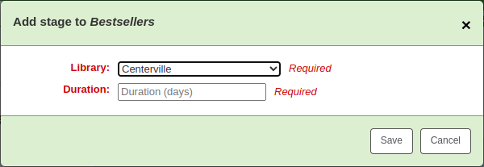
Library: choose the library this stage is for
Duration: enter the number of days the item should stay at this library before moving on
Click ‘Save’.
Once all the stages have been added, you can move them around using the handles on the left to change the order.
Adding items to a rota
Once a rota has stages, items can be added to it.
From the stock rotation summary page, click the ‘Manage’ button and choose the ‘Items’ option.
Click the ‘Add items’ button.
Items can be added to a rota individually (by barcode) or in bulk (via the upload of a line delimited barcode file).
Items can also be added to a rota through the staff interface catalog, in the ‘Rota’ tab on the left when viewing a detailed record.
Choose the rota to add the item to and click ‘Add to rota’.
Items can also be automatically added to rotas at acquisition time by using the LRP (Library Rotation Plan) field in EDI.
On the Manage > Items page, there will be a summary of all items on the rota with their current location. You have the options to immediately progress items, mark items as ‘in demand’ and remove an item from rotation.
备注
You can customize the columns of this table in the ‘Table settings’ section of the Administration module (table id: stock_rotation_manage_items).
Move to next stage: progress the item directly to the next stage even if the duration at the current stage is not complete.
Add “In demand”: double the duration the item will stay at it’s current stage compared to what is set in the rota. This is often used for items that are found to be unexpectedly popular at a particular library.
Remove from rota: remove the item from the rota.
Individual items can also be managed from the staff interface catalog, in the ‘Rota’ tab.
Grouping items
You can group items in order to place holds on a subset of items on a bibliographic record, rather than a specific item or the next available item. For example, if you have a bibliographic record for a series, and several items of each volume, you can group items by volumes and then place holds on the next available item of “Vol. 4”.
备注
Staff users need the manage_item_groups permission
You need to first enable the item groups feature with the EnableItemGroups system preference.
Once the system preference is enabled, a new ‘Item groups’ tab will appear in the detailed record in the staff interface.
Click on the ‘New item group’ button
In the form that appears,
Name: enter a name for the group, this name will visible in the staff interface and the OPAC
Display order: enter a number for the position this group should be displayed compared to the other groups of the same record (for example, if you have groups with 0, 1 and 2 as display order, the 0 group will be displayed first, the 1 group will be displayed second and the 2 group will be displayed third. You can put any number in there, your groups can be 3, 11 and 27, in that case, 3 will be displayed first, then 11 and finally 27)
Click ‘Submit’ to create the group
Once it is created, you can add items to the group.
In the ‘Holdings’ tab, check the items that should be added to the group
At the top of the table, there will be batch actions, click on ‘Add/move to item group’
Choose which group the selected items should be added to
Click ‘Set item group’
The item group in which each item is will be shown in the ‘Holding’ table.
To delete an item group, go to the ‘Item groups’ tab, and click the ‘Delete’ button. This will only delete the group, the items will remain, but ungrouped.
館藏資訊
每個書目紀錄左方有個分頁可檢視館藏。
Clicking that tab will give you basic information about the items.
The ‘Item information’ section shows basic information about the item such as the home library, item type, collection code, call number, copy number, replacement price, and accompanying materials.
The ‘Statuses’ section shows the current status of the item. If the item is on loan, the loan details are displayed. If the item was renewed, you can click ‘View’ to see the details of any renewals, which include the date, the staff member who renewed the checkout, as well as if it was done manually or automatically (through the automatic_renewals.pl cronjob).
You can also view and edit the status information in this section. If an item is marked lost, damaged or withdrawn, you will see the date that status was applied.
The ‘Priority’ section shows if the item is excluded from local holds priority.
The ‘History’ section shows information about the acquisition and check out history of the item. If you ordered the item through the acquisitions module, this section will include the order date, vendor, accession (receiving) date and invoice number. Clicking the order or accession date will bring you to the acquisitions information for that item. This section also shows the number of total checkouts (with a link to see the checkout history), the date and time the item was last seen, the date it was last borrowed and the last patron to borrow this item (if the StoreLastBorrower system preference is enabled), if the item was paid for by the patron, the volume or serial number information, and public and non-public notes.
為館藏新增封面圖片
If you have either OPACLocalCoverImages or LocalCoverImages set to ‘Show’, you can upload cover images for individual item records from the ‘Upload image’ option from the Edit button on the right of the Holdings table.

點擊選擇檔案在你的電腦上找到影像檔案，然後上傳檔案。
On the next screen you are given the option to replace existing images. You can then click on Process images.
影像將顯示在館藏顯示的封面影像列中。

To delete an image, click on the image in the holdings display. You will see a greyed out copy of the image with the option to delete.

移動館藏
Items can be moved from one bibliographic record to another using the ‘Attach item’ option.
進入書目紀錄並從 ‘編輯’ 選單選取 ‘附加館藏’ 就能把館藏加入此書目紀錄。

Simply enter the barcode for the item you want to move and click ‘Submit’.
若最後的館藏仍附掛在書目記錄上，將出現要求刪除原記錄的鈕。
If you want to move all items to a new record creating only one bibliographic record you can use the merge records tool instead.
刪除館藏
很多方法可以刪除館藏紀錄。打開書目紀錄詳情按上方的 ‘編輯’ 鈕就能刪除單筆館藏紀錄。從這裡再勾選 ‘編輯館藏’。

館藏清單的每個館藏旁有 ‘刪除’ 連結。按下此連結可刪除未借出的館藏。

若能確認附屬於書目紀錄的館藏都未借出，可以使用 ‘編輯選單’ 下的 ‘刪除全部館藏’ 選項，移除該紀錄的館藏。
You can also enable StaffDetailItemSelection to have checkboxes appear to the left of each item on the detail display. You can then check off the items you would like to delete and click ‘Delete selected items’ at the top of the list.
最後，使用 批次刪除工具 批次刪除館藏。
Batch deleting items
Get there: More > Cataloging > Batch editing > Batch item deletion
This tool will allow you to delete a batch of item records from Koha.
From the tool, choose to either upload a file of barcodes or itemnumbers, or scan item barcodes one by one into the box below the upload tool.
Once the file is uploaded or the barcodes listed, click ‘Continue.’
You will be presented with a confirmation screen. From here you can uncheck the items you don’t want to delete. You can check the ‘Delete records if no items remain’ box to delete the bibliographic record if the last item is being deleted.
备注
Items that are the last item attached to a bibliographic record with one or more record-level holds will be automatically unchecked. You will need to delete the hold before deleting the item.
Items that are checked out will also be automatically unchecked. They will need to be checked in before they can be deleted.
If your file (or list of scanned barcodes) has more than 1000 barcodes, Koha will be unable to present you with a list of the items. You will still be able to delete them, but not able to choose which items specifically to delete or delete the bibliographic records.
Click ‘Delete selected items.’
备注
If the items are checked out the items will not be deleted.
The deletion job will be enqueued in the background jobs.
To see the deletion details, click ‘View detail of the enqueued job’.
To delete a new batch of items, click ‘New batch item deletion’.
Batch deleting items from the bibliographic record
The batch item deletion tool is also available from the bibliographic record details page.
From the bibliographic record details page, click the ‘Edit’ button and choose the ‘Delete items in a batch’ option.
This will open the batch item deletion tool for the items of the specific record.
Batch deleting items from a report
The batch item deletion tool is also available from reports results when the results contain itemnumbers.
When the report contains the itemnumber, the option ‘Batch operations with X visible records’ will automatically appear. This option contains batch item modification ans batch item deletion.
By default, only 20 results are shown when running reports, therefore, the batch deletion will only be done on 20 results. If you have more results that you want to delete in a batch, make sure to change the number of results per page before choosing the batch operation.
館藏的流通紀錄
每筆書目紀錄有其流通紀錄(含或不含讀者資訊，視您的設定)，但每筆館藏也有其自身的流通紀錄。勾選紀錄左方的 ‘館藏’ 分頁，即可看到。
在 ‘紀錄’ 標題下有個連結至 ‘檢視館藏借出紀錄’，點選之後，開啟館藏的紀錄，看起來與書目紀錄的頁面略有不同。

Creating labels
Get there: More > Cataloging > Tools > Label creator
The label creator tool allows you to use layouts and templates which you design to print a nearly unlimited variety of labels including barcodes. Here are some of the features of the label creator tool:
Customize label layouts
Design custom label templates for printed labels
Build and manage batches of labels
Export single or multiple batches
Export single or multiple labels from within a batch
Export label data in one of three formats:
PDF - Readable by any standard PDF reader, making labels printable directly on a printer
CSV - Export label data after your chosen layout is applied allowing labels to be imported in to a variety of applications
XML - Included as an alternate export format
Label layouts
Get there: More > Cataloging > Tools > Label creator > Manage > Layouts
A layout is used to define the fields you want to appear on your labels.
Adding a layout
To add a new layout, click on the ‘New’ button at the top of the label creator tool and choose ‘Layout’.
Using the form that appears, decide what appears on your labels.
‘Layout name’: enter a name for the layout to help you identify it later.
‘Choose barcode type (encoding)’: if this is a barcode label, choose the encoding (Code 39 is the most common)
‘Choose layout type’: choose what type of information is printed on the label.
Only the bibliographic data is printed: only bibliographic information will appear on the label (this can be used for spine labels for example)
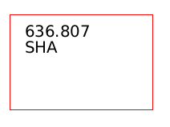
备注
Bibliographic data includes any of the data fields that may be mapped to your MARC frameworks.
Barcode precedes bibliographic data: the barcode will appear at the top of the label and the bibliographic information underneath
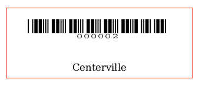
Bibliographic data precedes barcode: the bibliographic information will appear at the top of the label and the barcode underneath

Barcode and bibliographic data are printed on alternating labels: the bibliographic information will appear on one label, and the barcode on the next label, alternating for each item

Only the barcode is printed: only the barcode will appear on the label
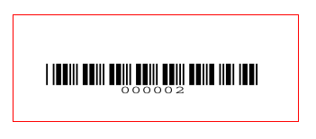
‘Bibliographic data to print’: if you chose to print bibliographic data on the label, choose from the preset list of fields which fields should appear on the label and in which order. Alternatively, you can click on ‘List fields’ and enter your own data.

备注
In ‘List fields’, you can specify any database field from the following tables (use the schema viewer (http://schema.koha-community.org) to find the field names):
items
biblioitems
biblio
branches
You can also specify MARC subfields as a 4-character tag-subfield string, for example 254a for the title field in MARC21.
You can also enclose a whitespace-separated list of fields to concatenate on one line in double quotes, for example “099a 099b” or “itemcallnumber barcode”.
Finally you can add in static text strings in single-quote, for example ‘Some static text here.’
‘Draw guide boxes’: choose if guidelines are printed around each label (this is useful when first setting up the label creator to check alignment with your label sheets)
‘Split call numbers’: choose if call numbers should be split (usually used on spine labels)
备注
Call number splitting rules are managed under Administration > Classification sources.
‘Text justification’: choose the text alignment (left, center or right)
‘Font’: choose the font type
Font type choices are currently limited to:
Times-Roman (regular, bold, italic, or bold-italic): a serif font type
Courier (regular, bold, oblique (italic), or bold-oblique (bold-italic)): a monospace font type
Helvetica (regular, bold, oblique (italic), or bold-oblique (bold-italic)): a sans-serif font type
‘Font size’: enter the font size in points
‘Oblique title’: choose if the title should be italicized
Click ‘Save’ to save the new layout.
After saving, your layouts will appear under Manage > Layouts.
Editing a layout
To edit an existing layout, click on the ‘Manage’ button at the top of the label creator tool and choose ‘Layout’.
In the table of currently available layouts, click the ‘Edit’ button next to the layout you want to edit.
Change the necessary values and click ‘Save’.
Deleting a layout
To delete an existing layout, click on the ‘Manage’ button at the top of the label creator tool and choose ‘Layout’.
In the table of currently available layouts, click the ‘Delete’ button next to the layout you want to delete, and confirm the deletion.
Label templates
Get there: More > Cataloging > Tools > Label creator > Manage > Label templates
A template is based on the label/card stock you are using. This might be Avery 5160 for address labels, Gaylord 47-284 for spine labels or Avery 28371 for your patron cards, just to give a couple of examples. These labels will include all of the information you will need for setting up in Koha. This information may be on the packaging, on the vendor’s website or it can be measured manually.
Adding a template
To add a new template, click on the ‘New’ button at the top of the label creator page and choose ‘Label template’.
Using the form that appears you can define the template for your sheet of labels or cards.
‘Template ID’: this will be automatically generated after saving your template, this is simply a system-generated unique id
‘Template code’: enter a code for the template, the code should be something you can use to identify your template on a list of templates
‘Template description’: use this field to add additional information about the template
‘Units’: choose which measurement scale you’re going to be using for the template. This should probably match the unit of measurement used on the template description provided by the product vendor.

The measurements, number of columns and number of rows can be found on the packaging, on the vendor’s website or they can be measured manually.
Page height: height of the page
Page width: width of the page
Label width: width of the label
Label height: height of the label

Top page margin: height between the top of the page and the top of the first row of labels

Left page margin: width between the left side of the page and the left side of the first column of labels

Top text margin: height between the top of the label and the top of the first line of text

Left text margin: width between the left side of the label and the start of the text

备注
If you do not supply a left text margin in the template, a 3/16” (13.5 point) left text margin will apply by default.
Number of columns: number of columns of labels in a page, or number of labels per row
Number of rows: number of rows of labels in a page, or number of labels per column
Gap between columns: width between two columns of labels
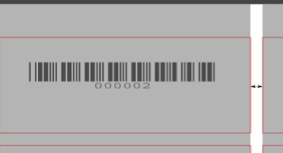
Gap between rows: height between two rows of labels
A profile is a set of “adjustments” applied to a given template just prior to printing which compensates for anomalies unique and peculiar to a given printer (to which the profile is assigned).
Before picking a profile try printing some sample labels so that you can easily define a profile that is right for your printer/template combination.
After finding any anomalies in the printed document, create a profile and assign it to the template.
Click ‘Save’ to save the new template.
After saving, your templates will appear under Manage > Label templates.
Editing a template
To edit an existing template, click on the ‘Manage’ button at the top of the label creator page and choose ‘Label template’.
In the table of currently available templates, click the ‘Edit’ button next to the template you want to edit.
Change the necessary values and click ‘Save’.
Deleting a template
To delete an existing template, click on the ‘Manage’ button at the top of the label creator page and choose ‘Label template’.
In the table of currently available layouts, click the ‘Delete’ button next to the layout you want to delete, and confirm the deletion.
Pinter profiles
- Get there: More > Cataloging > Tools > Label creator > Manage >
Printer profiles
A profile is a set of “adjustments” applied to a given template just prior to printing which compensates for anomalies unique and peculiar to a given printer (to which the profile is assigned). This means if you set a template up and then print a sample set of data and find that the items are not all aligned the same on each label, you need to set up a profile for each printer to make up for the differences in printing styles, such as the shifting of text to the left, right, top or bottom.
If your labels are printing just the way you want, you will not need a profile.
Adding a printer profile
To add a new profile, click on the ‘New’ button at the top of the label creator tool and choose ‘Printer profile’.
Using the form that appears you can create a profile to fix any problems with your template.
‘Printer name’: enter a name for the printer. It does not have to match your printer exactly, it is only used for reference within Koha, so you can use the printer model number or you can call it ‘the printer on my desk’.
‘Paper bin’: enter a name for the printer’s paper tray. Like the printer name, it is only used as a reference.
‘Template name’ will be filled in once you have chosen which template to apply the profile to in the template edit form
‘Units’: define what measurement scale you’re using for your profile.
The next sections are used to adjust the label printing.
Offset describes what happens when the entire image is off center either vertically or horizontally
Creep describes a condition where the distance between the labels changes across the page or up and down the page
备注
For these values, negative numbers move the error up and to the left and positive numbers move the error down and to the right
Example: the text is .25” from the left edge of the first label, .28” from the left edge of the second label and .31” from the left edge of the third label. This means the horizontal creep should be set to .03” to make up for this difference.
Click ‘Save’ to save the new profile.
After saving, your profiles will appear under Manage > Printer profiles.
Once you have saved your new profile, you can return to the list of templates and edit the template that this profile is for.
Editing a printer profile
To edit an existing printer profile, click on the ‘Manage’ button at the top of the label creator page and choose ‘Printer profiles’.
In the table of currently available printer profiles, click the ‘Edit’ button next to the profile you want to edit.
Change the necessary values and click ‘Save’.
Deleting a printer profile
To delete an existing printer profile, click on the ‘Manage’ button at the top of the label creator page and choose ‘Printer profiles’.
In the table of currently available profiles, click the ‘Delete’ button next to the profile you want to delete, and confirm the deletion.
Label batches
Get there: More > Cataloging > Tools > Label creator > Manage > Label batches
Batches are made up of the items for which you would like to print labels. Once in this tool you can search for the item records you would like to print out labels for.
Adding a label batch
Batches can be created in one of two ways. The first is to click the ‘Create label batch’ link on the Staged MARC management page.
The other is to choose to create a new batch from the label creator tool
You will be brought to an empty batch with a box to scan barcodes or itemnumbers in to and an ‘Add item(s)’ button at the bottom of the page.
You can either scan barcodes in to the box provided and click the ‘Add item(s)’ button or you can click the ‘Add item(s)’ button with the barcodes box empty. Clicking ‘Add item(s)’ with nothing in the barcodes box will open a search window for you to find the items you want to add to the batch.
From the search results, click the check box next to the items you want to add to the batch and click the ‘Add checked’ button. You can also add items one by one by clicking the ‘Add’ link to the left of each item.
Once you have added all of the items click the ‘Done’ button. Click again on the ‘Add item(s)’ button to transfer the items from the barcode box to the batch. The resulting page will list the items you have selected.
If some items were added more than once by accident, you can click the ‘Remove duplicates’ button. This will check barcodes and remove any duplicates from the batch.
If you need to remove some items from the batch, select them by checking the box on the right and click the ‘Remove selected items’ button.
Optionally, you can add a description to this batch, in case you need to find it later. Enter a description in the ‘Batch description’ field and click ‘Save description’. This description will appear in the ‘Currently available batches’ page.
To print your labels, click the ‘Export full batch’ button. To print only some of the labels, select the items and click the ‘Export selected item(s)’ button. To print only one label from the batch, click the ‘Export’ button to the right of that item. Either way you will be presented with a confirmation screen where you can choose your template and layout. If you’re using a sheet of labels that is not complete, you can enter the starting label (labels are counted horizontally).
You will then be presented with three download options: PDF, CSV, or XML.
After saving your file, simply print on the blank labels you have in your library.
The batch is saved for later use, if needed, and is accessible under Manage > Label batches.
Editing a label batch
To edit an existing label batch, click on the ‘Manage’ button at the top of the label creator page and choose ‘Label batches’.
You will access currently available batches.
You can print one or more batches directly from this page by checking the box to the right of the batch or batches to print and clicking ‘Export selected’.
To edit a batch, click the ‘Edit’ button next to the batch you want to edit.
Deleting a label batch
To delete an existing label batch, click on the ‘Manage’ button at the top of the label creator page and choose ‘Label batches’.
You will access currently available batches.
Click the ‘Delete’ button next to the batch you want to delete, and confirm the deletion.
You can also delete a batch from the batch page itself, by clicking the ‘Delete batch’ button above the table of items in the batch.
Barcode range
Get there: More > Cataloging > Tools > Label creator > New > Barcode range
If you want to print your barcode labels in advance, before even cataloging the items, you can choose to add a batch of a range of barcodes.
Click ‘New’ and choose ‘Barcode range’ from the label creator tool.
Enter the starting and ending barcodes.
警告
The barcode range tool does not accept leading zeroes. If you enter 0001234 the barcode that will be printed will be 1234.
Click ‘Print range’.
You will be presented with the confirmation screen where you can choose your template and layout and enter the starting label if using an incomplete sheet of labels.
备注
The only download option for barcode ranges is PDF.
Save the file and print it on a blank sheet of labels.
Barcode generator
Get there: More > Cataloging > Tools > Barcode generator
Koha offers a barcode generator tool that can be used to create images of barcodes for various uses (in notices for example).
This tool can be used for a number of types of barcodes, as well as QR codes.
It will create an image from the given barcode in the chosen barcode format and also generate a unique HTML tag which can be used anywhere.
To generate a new image, fill out the form.
Barcode type: choose the barcode type to be used
备注
Most barcode types allow only numerical characters.
The following allow alphanumeric characters:
Code39
NW7
QRcode
Some barcode types (EAN13, EAN8, UPCA, and UPCE) expect specific patterns (which can be found here https://barcode.tec-it.com/en/ under EAN/UPC).
Hide text: check this box if you only want the actual barcode on the image. If unchecked, the number will be printed in human readable characters under the barcode.
Barcode height: enter the height in pixels the barcode image should have
Barcode: enter the barcode to be printed
Click ‘Show barcode’.
On the right of the screen is the barcode image, which can be downloaded or printed.
Under the image, there is an HTML ‘img’ tag. You can copy the tag and paste it anywhere you need the barcode to appear (however, note that it is only available in the staff interface).
For a QR Code, the options are slightly different. Instead of ‘Barcode height’, there is a ‘QR Code module size’ field that can be adjusted by slider. The number refers to the size in pixels of each black or white square in the code (modules). The larger the modules, the larger the image will be.
A QR Code can take not only alphanumeric characters, but any type of textual information, such as a URL or even a short text.
Quick spine label creator
Get there: More > Cataloging > Tools > Quick spine label creator
备注
This tool does not use the label layouts or templates, it simply prints a spine label in the first spot on the label sheet, or on a single label from a label printer.
Define the fields you want to print on the spine label in the SpineLabelFormat system preference.
Format your label printing by either editing the spinelabel.css file found in koha-tmpl/intranet-tmpl/prog/en/css/ or adding the CSS directly in the IntranetUserCSS system preference.
For example, adding the following CSS code in IntranetUserCSS will alter the label’s font.
/* Modify the Quick Spine Label Creator Font etc */ .tools.labels #spinelabel { font-size:11.5pt; font-family:courier new; font-weight:bold; }
To use this tool you simply need the barcode for the book you’d like to print the spine label for, and click ‘View spine label’.
From the page that appears, click ‘Print this label’.
If for some reason you need to change the callnumber, click ‘Edit this label’. The lock icon on the button will become unlocked, and you will be able to click on the callnumber to edit it.
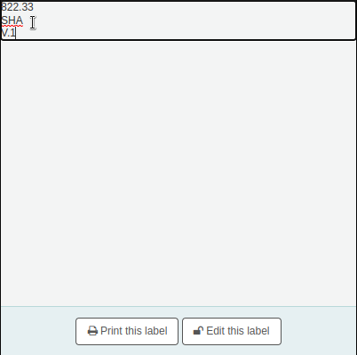
權威
權威紀錄是一種控制 MARC 紀錄欄位的方法。以權威紀錄控制主題標目、個人名稱與地名。
新增權威
勾選 ‘新增權威’ 鈕，或點選 ‘從Z39.50新增’ 鈕搜尋其他圖書館，就能新增權威紀錄。

顯示的表單允許您鍵入權威紀錄的所有必要詳情。

勾選題名出現分欄後，就能展開其值。勾選標籤右方的加號 (+) ，就能複製欄位或分欄。勾選欄位右方的刪節號 (…) ，就能使用外掛的說明。
連結權威至其他標目時，可按下欄位右方的刪節號 (…) ，啟用權威尋找外掛程式。
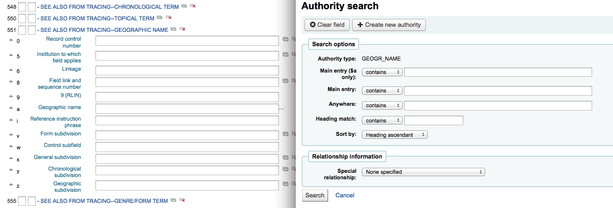
從此可搜尋權威紀錄檔找尋權威連結。若找不到，可點選 ‘新增’ 鈕加入必要的權威給此連結。此外掛程式允許您選擇權威間的關係。

選擇搜尋其他圖書館的權威記錄，將出現該搜尋框

從結果頁面可以點選記錄右方的 ‘匯入’ 連結，將資料加入 Koha

儲存之前顯示可編輯的權威表單

搜尋權威
可從權威紀錄頁面搜尋既有的詞彙以及相關的書目紀錄。

從此結果，可看到附加在此權威記錄的書目記錄，’作業’ 選單包括 :ref:` 編輯 <editing-authorities-label>`、合併 與 刪除 等連結 (若沒有任何書目記錄附加於此)。

從權威紀錄摘要右方的 ‘詳情’ 連結，打開完整的紀錄並可編輯該紀錄。
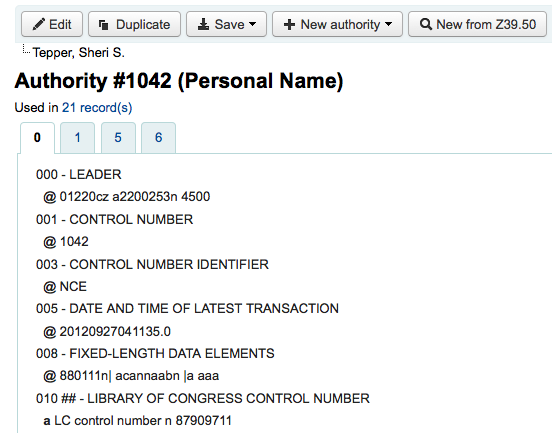
若權威紀錄包括 ‘參見’，您將看到它們分列在搜尋結果，勾選連結的標題，將執行搜尋該標題。

編輯權威
從搜尋結果裡勾選權威摘要，再點選記錄上方的 ‘編輯’ 鈕就可以編輯它。或點選搜尋結果內權威記錄左方的 ‘編輯’ 連結。

一旦你做了必要的編輯，就需點擊 ‘儲存’。
Depending on the number of bibliographic records this authority record is linked to, the bibliographic records may be updated right away. This depends on the value in the AuthorityMergeLimit system preference (the default is 50). If the number of bibliographic records is under the value of AuthorityMergeLimit, the bibliographic records will be changed right away. If the number of bibliographic records exceeds the value of AuthorityMergeLimit, they will only be updated when the merge_authorities.pl script is run.
必須先確定沒有被任何書目紀錄連結，才能刪除權威紀錄。未被連結的權威紀錄在右方顯示 ‘刪除’ 連結，點選後，出現權威紀錄摘要。
合併權威
重複的權威記錄，可以經由作業選單旁的 ‘合併’ 連結，將兩筆記錄合併。

在第一筆結果按 ‘合併’ 可看見在結果上方的權威清單。

接著需按第二個結果旁的 ‘合併’ 鈕。
Koha 要求編目員指定合併後保留的紀錄與刪除的紀錄。

顯示兩筆紀錄的 MARC(從權威號碼的分頁進入)。預設是勾選第一筆紀錄的所有欄位，剔除不要的欄位；再移入第二個分頁，選擇要合併紀錄的欄位。

選好之後按 ‘合併’ 鈕。主紀錄將保留而第二筆紀錄將被刪除。

If you have two authority records for the same heading in different frameworks, you can merge them together by clicking the ‘Merge’ link, found in the actions menu, next to two results on an authority search. For example, these authority records using different frameworks can be merged.
如果你要選擇 ‘合併’ 連結，可在頂端記錄的操作選單中找到。
您將會看到該權威記錄列在結果的頂端。
接著需選擇第二個結果旁的 ‘合併’ 鈕。
You will be asked which of the two records you would like to keep as your primary record and which will be deleted after the merge. You will also use the dropdown menu to pick which framework to use.

顯示兩筆紀錄的 MARC(從權威號碼的分頁進入)。預設是勾選第一筆紀錄的所有欄位，剔除不要的欄位；再移入第二個分頁，選擇要合併紀錄的欄位。
“參考” 記錄（主要記錄）將在你選擇的框架內：
選好之後按下 ‘合併’ 鈕。主要紀錄將包括選擇的資料次要資料將被刪除。

連結標題的MARC標籤將被相應更新。
Exporting data
Get there: More > Cataloging > Export > Export catalog data
Koha comes with a tool that will allow you to export your bibliographic, items and authority records in bulk. This can be used to send your records to fellow libraries, organizations or services; or simply for backup purposes.
Exporting bibliographic records
At the top of the screen you need to pick what data you’re exporting. If you’re exporting bibliographic records with or without the item information, click the ‘Export bibliographic records’ tab.
Fill in the form in order to limit which records are exported (all fields are optional)
From biblionumber / To biblionumber: limit the exportation to a range of biblionumbers
Item type: limit to a specific item type, or several item types
警告
This limit will use the item type defined in the item-level_itypes system preference.
If the item-level_itypes system preference is set to ‘specific item’ and there are no items attached to a bibliographic record, that record will not be exported.
To export all bibliographic records of a specific type, the item-level_itypes system preference needs to be set to ‘bibliographic record’.
With items owned by the following libraries: limit to a specific library or group of libraries
警告
This is a filter; if this is set to the default value (all libraries selected), or select one or more libraries, bibliographic records with no items attached will not be exported.
To get bibliographic records with no items, ‘clear all’ selected libraries (i.e. de-select all libraries).
Call number range: limit to a call number range
Accession date (inclusive): limit to an acquisition date range
Use a file: you can load a file of biblionumbers of the records to be exported. The file type needs to be .csv or .txt
Don’t export items: by default, items will be exported. Check this box to only export bibliographic records
Remove items not owned by selected libraries: check this box to limit the exported items to items from the library you’re logged in as (if the ‘With items owned by the following libraries’ field above is set to ‘All’) or to the library or libraries selected above
Don’t export fields: enter which fields that should not be exported, separated by spaces. This can be handy if you’re sharing your data, you can remove all local fields before sending your data to another library
File format: choose the file type, MARC or MARCXML
File name: if needed, enter a new file name for the export file
Click ‘Export bibliographic records’
Inventory
Get there: More > Cataloging > Reports > Inventory
Koha’s inventory tool can be used in one of three ways:
By creating a shelf list that you can then mark items off on;
By uploading barcodes gathered by a portable scanner;
By comparing barcodes gathered by a portable scanner or scanned directly to a generated shelf list.
Creating a shelf list
If you do not have the ability to use your barcode scanner on the floor of the library, the option available to you is to generate a shelf list based on criteria you enter. You can then print it to use while walking around the library checking your collection or use it directly in Koha on a portable device.
First, choose the criteria for the items you want to print out on a list. All parameters are optional, but if none are selected, the resulting list might be quite large.
Library: choose the branch you want to check, as well as if that branch is the home library or the current holding library of the items.
Shelving location (items.location) is: you can filter by location.
Item callnumber between … and …: you can also limit the list to a specific range of callnumbers.
Call number classification scheme: if filtering by call number, make sure to choose the correct classification scheme
You can filter even more with item statuses (not for loan status, lost status, withdrawn status or damaged status). Check the boxes next to the statuses you want to include. For example, if you are using the list to shelf read, check only the ‘for loan’ status as the other items probably won’t be on the shelves.
Last inventory date: enter a date here to skip items that have been marked as seen recently.
Skip items on loan: check this box to filter out loaned items from the list.
Skip items on hold awaiting pickup: check this box to filter out items that are awaiting pickup by patrons
Item types: check the boxes next to the item types you want to include in your shelf list
Export to CSV file: check this box to generate a CSV file for altering in an application on your desktop. If this box is unchecked, the list will be presented on the screen.
Click on ‘Submit’ to generate your shelf list.
Once you have found the items on your shelves, return to this list and check the boxes next to the items you found. Next, click on one of the three buttons to continue:
Mark seen and quit: updates the ‘last seen’ date and time of the selected items to now and returns to the previous screen.
Mark seen and continue: updates the ‘last seen’ date and time of the selected items to now and shows the next page of the list.
Continue without marking: doesn’t update any of the items on this page and shows the next page of the list.
Uploading barcodes with a scanner
If you have a portable scanner (or a laptop and USB scanner) you can walk through the library with the scanner in hand and scan barcodes as you come across them (on a laptop, scan the barcodes into a text file or directly into the on screen text box). Once finished you can then upload the text file generated by the scanner to Koha.
Set inventory date to: choose the date you want to mark all items as last seen.
Compare barcodes list to results: uncheck for this method.
Do not check in item scanned during inventory: unless this is checked, Koha will check in items scanned, as it is assumed that they are on the shelf and so not loaned out. If you do not want to check in scanned items, check this option.
Check barcodes list for items shelved out of order: if this option is checked, Koha will compare the call numbers and make sure they are in the correct order.
Click ‘Submit’. This will update all the items’ ‘last seen’ date to the chosen date (time last seen will be 00:00).
Once you have the updated the last seen date for all items scanned during the inventory it is possible to use reports to identify items that were not scanned and can therefore be assumed missing (you can use the batch item modification tool to change the LOST status of these items). There are sample reports you can use on the Koha SQL Reports Library.
Comparing scanned barcodes to a shelf list
Alternatively, you can combine the two methods to automatically compare a list of scanned barcodes with a generated list.
First, upload you barcode file or scan the barcodes in the box.
Set inventory date to: choose the date you want to appear in the items’ ‘last seen’ field (the time last seen will be set to 00:00).
Compare barcodes list to results: should automatically be checked.
Do not check in items scanned during inventory: make sure to check this option if you do not want the scanned items to be automatically checked-in if they are checked-out.
Choose the filters (library, shelving location, callnumbers, statuses or item types) to generate a list with which to compare your barcodes. Click on ‘Submit’.
备注
Depending on the number of barcodes you are comparing, this may take a few minutes. It is not recommended to compare lists of more than 1000 barcodes as this may cause a session timeout.
Once Koha has finished comparing the barcodes file to the generated list, it will return the number of items updated and a list of problematic items.
备注
Unlike when creating a shelf list, the list that will be presented here will only contain the items that Koha has determined are problematic.
Missing (not scanned): the item is in the generated list but not in the barcodes file.
Found in wrong place: the item is in the barcodes list, but not in the generated list.
Still checked out: the item is checked out, but is in the generated list. It was not automatically checked in.
No barcode: the barcode doesn’t exist.
Unknown not-for-loan status: the item has ‘not for loan’ status that is not in the NOT_LOAN authorized values list
Item may be shelved out of order: the callnumber is out of order
編目指南
書目紀錄編目速查表
This section is for MARC21.
欄號 |
書標 |
說明 |
指示 |
|---|---|---|---|
000 |
記錄標示 |
Describes the record (i.e. surrogate) – is it a record for a monograph? A serial? |
Click in this field to fill it in. Then set “Bibliographic level” to ‘a’ for articles or ‘s’ for serials. Otherwise, leave everything as is. The value in position 6 influences the type of material in 008. |
001 |
控制碼 |
近用碼。 |
Enter the accession number written inside the item here. For articles and items which do not have accession numbers, leave blank. You can use the autoControlNumber system preference to automatically fill this field with the biblionumber of the record. |
003 |
控制碼辨識單位 |
您的 MARC 機構碼 |
Click in this field to fill it in (will auto fill if you have your MARCOrgCode preference set). |
005 |
D & T LATEST TRANSACTION |
今天日期與現在時間。 |
按此欄位填入資料。 |
008 |
定長資料細目 |
包括電腦可讀的若干事項。 |
The type of material is automatically set according to the leader, position 06. Generally you will only use ‘s’ (single) or ‘m’ (multiple) options for position 06- use the former when the item was published in a single year, the latter when it was published over the course of several. If there is a single date, only enter a date in the first date field (positions 07-10). Enter the three-digit country code in positions 15-17, being sure to add spaces if the country code is fewer than three characters long. If there is an index, note that fact in position 31. Enter the three-letter language code in positions 35-37. |
010 |
美國國會圖書館控制號碼 |
美國國會圖書館管制其編目紀錄流程用的號碼。 |
從館藏的版權頁 (若在美國出版) 或 LC的目錄取得該號碼。若找不到，別理它。 |
020 |
ISBN |
出版社使用的號碼用於辨識圖書之用。 |
若出版品本身無此號碼，可能就沒有。 |
022 |
ISSN |
出版社使用的號碼用於辨識期刊之用。 |
若出版品本身無此號碼，可能就沒有。 |
033 |
事件的日期/時間與地點 |
適用於拍賣日期。拍賣目錄的必備欄位。 |
祗進行一天的拍賣，以 YYYYMMDD 格式在分欄 ‘a’ 鍵入日期並在第一個指標鍵入 ‘0’。連續或不連續進行兩天的拍賣，新增重複的分欄 ‘a’ 以 YYYYMMDD 格式著錄每個拍賣日期，並且在第一個指標鍵入 ‘1’。連續進行兩天以上的拍賣，以分欄 ‘a’ (以 YYYYMMDD 格式) 著錄拍賣的第一天，並且新增重複的分欄 ‘a’ (也是 YYYYMMDD 格式) 著錄拍賣的第最後一天，在第一個指標鍵入 ‘2’。 |
040 |
編目來源 |
著錄新增與修改紀錄的機構。 |
匯入的紀錄，應新增分欄 ‘d’ 與 OCLC 代碼為其值。新增的紀錄，其分欄 ‘c’ 含有 OCLC 代碼為其值。 |
041 |
語文代碼 |
若館藏有多個語文，用以辨識所有的語文。 |
文字的主要部份祗有一種語文時，在分欄 ‘a’ 著錄其語文代碼。若摘要以特定語文呈現，則新增分欄 ‘b’ 著錄其語文代碼。 |
100 |
主要款目–個人名稱 |
主要著者名稱的權威型式 |
見權威標題速查表與 AACR2。第一個指標的值通常為 ‘1’，表示該款目先著錄的是姓。若姓名裡祗有名，則第一個指標應為 ‘0’。 |
110 |
主要款目–團體名稱 |
主要團體著者名稱的權威型式。拍賣目錄的必備欄位。 |
拍賣目錄應使用欄位 110 而不是 100。見權威標題速查表與 AACR2。設定第一個指標為 ‘2’。 |
111 |
主要款目–會議名稱 |
做為會議主要提供者 (如會議刊物) 的權威型式 |
見權威標題速查表與 AACR2。設定第一個指標為 ‘2’。 |
245 |
題名敘述 |
著錄題名頁 (或主要著錄來源) 的題名敘述 |
將題名著錄於分欄 ‘a’、副題名於分欄 ‘b’、著者敘述於分欄 ‘c’。若新增紀錄給多冊館藏的其中一冊或部份，則應將該部份的編號著錄於分欄 ‘n’ 並將該部份的題名著錄於分欄 ‘p’。拍賣目錄的日期 (格式為 ‘MM/DD/YYYY’)，應以方括弧圈住置於分欄 ‘f’。見 ISBD 標點符號速查表。若沒有著者則把第一個指標設為 ‘0’，否則設為 ‘1’。第二個指標用於不排序的字元數 (即，起首的冠詞加其空格 … 對 “The ” 而言第二個指標為 ‘4’)。 |
246 |
其他題名 |
搜尋與排序用題名的其他型式 |
把讀者可能搜尋的其他題名，著錄於此。不要納入起首的冠詞。第一個指標應為 ‘3’，若題名祗是不同的拚法，則第一個指標應為 ‘1’。 |
250 |
版本敘述 |
著錄來自題名頁 (或主要著錄來源) 的版本資訊 |
原樣照錄來自題名頁的版本資訊。可以縮寫太冗長的版本資訊。 |
260 |
出版 (印刷) |
出版資訊。 |
出版地置於分欄 ‘a’、出版者在分欄 ‘b’、出版年 (或可能的年代) 在分欄 ‘c’。見 ISBD 速查表。 |
264 |
出版者。 |
製作者、出版者、發行者、製造者與著作權說明。 |
出版地置於分欄 ‘a’、出版者置於分欄 ‘b’、出版年 (或可能的年代) 置在分欄 ‘c’。見 ISBD 速查表。把出版者的第二指引設為 ‘1’ 就能動態設定此標籤。 |
300 |
稽核項 |
稽核項 |
數量單位置於分欄 ‘a’、簡述插圖或地圖等 “特殊” 稽核細節於分欄 ‘b’ (見 AACR2)、高廣與尺寸置於分欄 ‘c’。見 ISBD 速查表。 |
490 |
集叢項 |
照錄館藏記載的集叢項內容。 |
把集叢題名著錄於分欄 ‘a’ 集叢號著錄於分欄 ‘v’。參見 ISBD 標點符號速查表。若使用欄位 830 則把第一個指標設為 ‘1’。做為一般規則，必須照做。 |
500 |
一般附註 |
不適用於其他地方的附註。 |
以完整的句子記載附註，每個主題各有獨立的 500 欄位。 |
501 |
合刊註 |
與其他紀錄裝訂在一起的作品。 |
將其關係記載於分欄 ‘a’。 |
504 |
書目註 |
說明作品包括書目。 |
若作品包括書目與索引，文字記載為 “含參考書目 (面：XXX-XXX) 及索引。” 於分欄 ‘a’。若作品沒有索引，移除該部份的文字。若參考資料分散作品各處沒有聚在一起，則移除括號及其敘述。 |
505 |
內容註 |
標準格式的內容清單。未格式化的內容可列在欄位 500 (一般附註)。 |
見 ISBD 速查表。設定第一個指標為 ‘0’。若含獨立的著者與題名代碼，則設定第二個指標為 ‘0’。否則，讓第二個指標為空白。 |
518 |
事件之日期/時間與地點註 |
適用於拍賣日期。 |
在拍賣目錄裡，以 ‘January 2, 1984’ 格式把拍賣日期鍵入分欄 ‘a’ |
520 |
摘要、提要註。 |
圖書或論文的摘要。 |
大部份情況下，編目員不需自行撰寫摘要。摘要可能來自讀者無法自行評論的館藏，印刷於酸紙的圖書或 CD-ROM。 |
546 |
語文註 |
作品使用的語文註 |
祗適用於多語文的作品。見 ISBD 標點符號速查表。 |
561 |
館藏所有權與館藏歷史註 |
著錄館藏前手所有權。 |
祗適用於善本書。 |
563 |
裝訂資訊註 |
著錄館藏的裝訂。 |
祗適用於善本書。 |
590 |
在地使用註 |
在地使用註。拍賣目錄的必備欄位。 |
用於拍賣目錄指出拍賣售出的硬幣類型- 羅馬、希臘等。 |
600 |
主題附加款目–個人名稱 |
個人姓名的權威型式使用於作品討論的人 |
見權威標題速查表與 AACR2。第一個指標應為 ‘1’，表示該款目以姓在前。若名稱祗有名，則第一個指標設為 ‘0’。若在美國國會圖書館權威檔案找到該名稱，則第二個指標設為 ‘0’。否則第二個指標設為 ‘4’。 |
610 |
標題附加款目–團體名稱 |
團體名稱的權威型式用於作品討論的機構 |
見權威標題速見表與 AACR2。第一個指標設為 ‘2’。若在美國國會圖書館權威檔案找到該名稱，則設定第二個指標為 ‘0’。否則第二個指標設為 ‘4’。 |
611 |
標題附加款目–會議名稱 |
會議名稱的權威型式用於作品討論的會議 |
見權威標題速見表與 AACR2。第一個指標設為 ‘2’。若在美國國會圖書館權威檔案找到該名稱，則設定第二個指標為 ‘0’。否則第二個指標設為 ‘4’。 |
630 |
標題附加款目–劃一題名 |
其他作品題名的權威型式用於原作品 |
見權威標題速見表與 AACR2。第一個指標設為不排序字元數 (首字為冠詞及其空格 … “The ” 的第一個指標設為 ‘4’)。若在 LC 權威檔案找到該名稱，則設定第二個指標為 ‘0’。否則第二個指標設為 ‘4’。 |
650 |
標題附加款目–主題用語 |
以美國國會圖書館主題標題表描述作品的主題 |
見權威標題速見表與 AACR2。若在美國國會圖書館權威檔案找到該名稱，則設定第二個指標為 ‘0’。否則第二個指標設為 ‘4’。 |
651 |
標題附加款目–地理名詞 |
以美國國會圖書館主題標題地理名詞表描述作品的主題 |
見權威標題速見表與 AACR2。若在美國國會圖書館權威檔案找到該名稱，則設定第二個指標為 ‘0’。否則第二個指標設為 ‘4’。 |
655 |
索引詞彙–體裁/型式 |
著錄館藏是什麼，而不是該館藏關於什麼。 |
通常適用於拍賣目錄，有個體裁標題 “拍賣目錄” (確認找到權威標題！) 若在 LC 權威檔案找到該名稱，則設定第二個指標為 ‘0’。若使用專業辭語典，則設定第二個指標為 ‘7’ 並將該辭語典的代碼著錄於分欄 ‘2’。否則第二個指標設為 ‘4’。 |
690 |
在地標題附加款目–主題用語 |
取自任何客製化的主題權威檔案。 |
若沒有適合的 LCSH 術語，可以把其他目錄找到的術語當成主題標目置於 690。 |
691 |
在地標題附加款目–地理名稱 |
取自任何客製化的主題權威檔案。 |
若沒有適合的 LCSH 術語，可以把其他目錄找到的術語當成主題標目置於 691。 |
700 |
附加款目–個人名稱 |
適用於第二著者和作品產製有關的其他人。 |
見權威標題速查表與 AACR2。第一個指標的值通常為 ‘1’，表示該款目先著錄的是姓。若姓名裡祗有名，則第一個指標應為 ‘0’。 |
710 |
附加款目–團體名稱 |
適用於和作品產製有關的團體 (如，出版者)。 |
見權威標題速查表與 AACR2。設定第一個指標為 ‘2’。 |
711 |
附加款目–會議名稱 |
適用於和作品產製有關的會議 (如，貢獻給作品的討論會)。 |
見權威標題速查表與 AACR2。設定第一個指標為 ‘2’。 |
730 |
附加款目–劃一題名 |
適用於和作品產製有關的劃一題名 (如，啟發現在的作品) |
見權威標題速見表與 AACR2。設定第一個指標為不排序字元數 (即，首字為冠詞及其空格 … “The ” 的第一個指標設為 ‘4’)。 |
773 |
主館藏款目 |
著錄包括此作品的較大書目單位 (即，包括篇章與論文的圖書或期刊紀錄) |
主出版品是著者主要款目，則把該著者名稱的權威型式置入分欄 ‘a’。題名置入分欄 ‘t’。若主出版品是獨立作品，把出版資訊置入分欄 ‘d’。若使用 ISSN 與 ISBN，則應分別置於分欄 ‘x’ 與 ‘z’。關係資訊 (如，卷期編號、頁碼等) 應置入分欄 ‘g’。分欄 ‘q’ 包括館藏位置的編碼資料：卷、期與號以冒號分隔，在分欄最後鍵入 ‘<’ 及首頁頁碼。設定第一個指標為 ‘0’。若想產生 “在：” 標籤，則讓第二個指標空白。若希望在欄位 773 顯示文字，則設定第二個指標為 ‘8’ 並新增分欄 ‘i’ 在欄位開始置入標籤 (如 “$i 抽印本來自：”)。 |
830 |
集叢附加款–劃一題名 |
著錄集叢名稱的權威格式於欄位 490。通常等同於 490。 |
見權威標題速見表與 AACR2。設定第二個指標為不排序字元數 (即，首字為冠詞及其空格 … “The ” 的第二個指標設為 ‘4’)。 |
852 |
書架位置/索書號 |
圖書、小冊子與論文期刊等館藏的書架位置。 |
祗有一筆紀錄與一個條碼的單冊館藏不要置於此欄位。若館藏沒有條碼，或建立其中一篇文章的紀錄，將書架位置存於分欄 ‘a’ (見 ANS 編目文件)、索書號置於分欄 ‘i’。設定第一個指標為 ‘8’。 |
856 |
電子資源位址及取得方法 |
連結至線上資料。 |
將電子版或摘要等的 URL 置於分欄 ‘u’ 並把連結的題名置於分欄 ‘y’。設定第一指標為 ‘4’。 |
942 |
新增款目細目 (Koha) |
供 Koha 使用的專屬資料。 |
設定分欄 ‘c’ 給適當的館藏類型。 |
表：編目指南
Koha-專用欄位
Koha使用三個欄位來儲存它的特定訊息。
At the record level, 942 (MARC21) or 942 and 099 (UNIMARC) is used to store information such as record-level item type, record-level call number and classification scheme.
The item (holding) information is stored in 952 (MARC21) or 995 (UNIMARC).
System control numbers for Koha are stored in 999 (MARC21) or 001 and 090 (UNIMARC).
Added entry elements (942 / 099)
942$0 / 099$x - Koha issues (borrowed), all copies
MARC21: 942$0
UNIMARC: 099$x
這個欄段包含這個記錄的所有館藏的問題/檢查的總數。它是使用 更新_totalissues.pl 工作排程來填充的。
映射到：biblioitems.totalissues
索引於: totalissues
警告
這個欄段不應該被編輯，也不應該被手動編輯。
942$2 - 分類法來源或排架架構
MARC21: 942$2
UNIMARC: 942$2
This field contains the source of classification used by the record’s call number (942$h and 942$i (MARC21)).
There is a choice of classification sources as they are defined in administration. If no classification scheme is entered, the system will use the value entered in the DefaultClassificationSource preference.
The source of classification will be used, along with the call number itself (942$h and 942$i (MARC21)) to create the normalized call number used when sorting by call number.
映射到：biblioitems.cn_source
檢索於：cn-bib-source
942$6 - Koha正常化分類法供排序之用
MARC21: 942$6
UNIMARC: 942$6
This field contains the normalized call number used for sorting, based on the record-level call number (942$h and 942$i (MARC21)) and the classification source (942$2).
映射到：biblioitems.cn_sort
收錄於：cn-bib-sort
警告
這個欄段不應該被編輯，也不應該被手動編輯。
942$c - Koha館藏類型
MARC21: 942$c
UNIMARC: 942$c
這個欄位包含記錄級別的館藏類型。
記錄層級的館藏類型在Koha的不同地方都有使用。
The value from 942$c is copied to 952$y (MARC21) or 995$r (UNIMARC) as the default value when adding a new item to that record
如果 :ref:`項目層級_itypes<item-level_itypes-label>`系統偏好允許的話，記錄層級的館藏類型可以用於流通規則（這個系統偏好讓你在流通規則中使用記錄層級或館藏層級的館藏類型之間進行選擇，以及其他事項）
The record-level item type is indexed and used in the search (see also the AdvancedSearchTypes system preference) as well as the facets (this is useful to find records that don’t have items, like records for online resources, ebooks, pdf files, etc.)
記錄層級的館藏類型用於記錄層級/”下一個可用” 預約
記錄層級的館藏類型用於記錄層級 文章請求
記錄級別的館藏類型顯示在館員介面的各種表格中，在流通模塊等地方（可以在管理模組的 :ref:`’表格設定’<column-settings-label>’部分隱藏不需要的列）
映射到：biblioitems.itemtype
索引於：itemtype (mc-itemtype), itype (mc-type)
942$e - 版
MARC21: 942$e
UNIMARC: N/A
該欄位包含版本訊息。
942$h - 分類部分
MARC21: 942$h
UNIMARC: N/A
This field contains classification part of the call number. It is used, along with 942$2 and 942$i (MARC21) to create the normalized call number (942$6) used when sorting by call number.
映射到：biblioitems.cn_class
索引於：cn-class
942$i - 館藏部分
MARC21: 942$i
UNIMARC: N/A
This field contains item part of the call number. It is used, along with 942$2 and 942$h (MARC21) to create the normalized call number (942$6) used when sorting by call number.
映射到：biblioitems.cn_item
索引於：cn-item
942$k - 索書號前綴
MARC21: 942$k
UNIMARC: N/A
該欄位包含呼叫號碼的前綴。
映射到：書目.cn_前綴
索引於：cn-字首
942$m - 索書號字尾
MARC21: 942$m
UNIMARC: N/A
該欄位包含索書號的字尾。
映射到：書目.cn_字尾
收錄於：cn-字尾
942$n / 955$n - Suppress in OPAC
MARC21: 942$n
UNIMARC: 955$n
If the OpacSuppression system preference is set to ‘hide’, this field indicates if the record should be hidden from the OPAC.
在這個欄段中，’1’意味著該記錄將在OPAC中被隱藏，’0’（或空白）意味著該記錄將在OPAC中看見。
如果你不想記住數值，你可以在這個欄位使用 是_否 容許值列表。
索引於：抑制
942$s / 099$s - Serial record flag
MARC21: 942$s
UNIMARC: 099$s
這個欄位被期刊模組用來表明該記錄是否與期刊訂閱有關。
映射到：書目.連續期刊
警告
這個欄段不應該被編輯，也不應該被手動編輯。
位置和館藏訊息 (952)
Koha uses field 952 to store item (holding) information in MARC21, and field 995 in UNIMARC.
952$0 / 995$0 - Withdrawn status
MARC21: 952$0
UNIMARC: 995$0
用途
這個欄位用於設定館藏的撤銷(淘汰)狀態。
你可以使用撤回的狀態來剔除館藏，而不刪除館藏。
在 :ref:`搜尋結果<search-results-label>`中，撤回的館藏將被標記為不可用。
對流通的影響
被撤回的館藏將不能再被借出。
A withdrawn item will not be able to be checked in unless the BlockReturnOfWithdrawnItems system preference allows it.
價值
撤回的狀態是數字的，’0’（或空白）意味著’未撤回’，任何其他數字意味著’撤回’。
預設情況下，該欄位與撤銷 :ref:`容許值類別 <existing-values-label>`相關，所以你不必記住數值。 撤銷容許值類別中的預設值是：
1：撤回
顯示
館員介面
:ref:`搜尋結果<search-results-label>`（撤回的館藏將被標記為不可用）
記錄詳情頁中的預約表
書目記錄的’館藏’標籤，’狀態’下的’撤銷狀態’。
OPAC
:ref:`搜尋結果<search-results-label>`（撤回的館藏將被標記為不可用）
記錄詳情頁中的預約表
To hide withdrawn items from the OPAC, use the OpacHiddenItems system preference.
映射到：館藏.撤回
收錄於：撤回
952$1 / 995$2 - Lost status
MARC21: 952$1
UNIMARC: 995$2
用途
這個欄位用於設定館藏的遺失狀態。
你可以使用遺失狀態，將館藏標記為遺失或丟失
在 :ref:`搜尋結果<search-results-label>`中，丟失的館藏將被標記為不可用。
Marking an item lost while it is checked out can charge the replacement cost (952$v (MARC21) or 995$g (UNIMARC)) to the patron (see WhenLostChargeReplacementFee), as well as a processing fee (the processing fee is set at the item type level)
逾期若干天后，可以用 :ref:`longoverdue.pl 工作排程<cron-long-overdues-label>`自動改變丟失狀態
對流通的影響
The ability to check out a lost item depends on the IssueLostItem system preference.
The ability to check in a lost item depends on the BlockReturnOfLostItems system preference.
價值
丟失狀態是數字的，’0’（或空白）意味著’未丟失’，任何其他數字意味著’丟失’。
預設情況下，該欄位與遺失 :ref:`容許值類別 <existing-values-label>`相關，所以你不必記住數值。 遺失容許值類別的預設值是：
1:遺失
2: 逾期太久 (遺失)
3: 遺失與賠償
4: 遺失
顯示
館員介面
:ref:`搜尋結果<search-results-label>`（丟失的館藏將被標記為不可用）
記錄詳情頁中的預約表
書目記錄的’館藏’標籤，’狀態’下的’丟失狀態’
OPAC
:ref:`搜尋結果<search-results-label>`（丟失的館藏將被標記為不可用）
記錄詳情頁中的預約表
It’s possible to configure Koha so that lost items don’t display in the OPAC with the hidelostitems system preference.
映射到：館藏.itemlost
索引於：丟失
952$2 / 995$4 - Source of classification or shelving scheme
MARC21: 952$2
UNIMARC: 995$4
用途
This field contains the source of classification used by the record’s call number (952$o (MARC21) or 995$k (UNIMARC)).
The source of classification will be used, along with the call number itself (952$o (MARC21) or 995$k (UNIMARC)) to create the normalized call number (952$6 (MARC21) or 995$s (UNIMARC)) used when sorting by call number.
價值
可以選擇 分類來源，因為它們在管理中被定義。
If no classification scheme is entered, the system will use the value entered in the DefaultClassificationSource preference.
顯示
這在OPAC和館員介面中都不顯示。該訊息只在館藏的編輯表格中可使用。
映射到：館藏.cn_來源
索引於：分類源
952$3 / 995$l - Materials specified
MARC21: 952$3
UNIMARC: 995$l (L)
用途
這個欄位用於新增關於附加資料的訊息，或指定館藏有多少件。
對流通的影響
這一訊息將在館藏流通時顯示出來，這樣流通人員就知道要確保在結帳時所有的附加資料都在那裡，而且在歸還館藏時仍然在那裡。
價值
這是一個自由文字欄位，但可以將其與 :ref:`MARC框架<edit-a-marc-subfield-label>`中的容許值類別聯繫起來，使其成為一個下拉選單。
顯示
館員介面
這一訊息將在結帳或登記館藏時出現
記錄詳情頁中的預約表
备注
使用 :ref:`’表格設定’<column-settings-label>`如果你想隱藏該列 - 模組。目錄 - 表ID：預約_表格 和/或 otherholdings_表格 - 欄：預約_資料 或 otherholdings_資料
書目記錄的’館藏’標籤，’館藏訊息’下的’指定資料’
OPAC
記錄詳情頁中的預約表（預設是隱藏的）
备注
使用 :ref:`’表格設定’<column-settings-label>`如果你想顯示該列 - 模組: OPAC - 表格 id: 持有人 - 欄: 館藏_資料
映射到：館藏.資料
索引於：指定的資料
952$4 / 995$1 - Damaged status
MARC21: 952$4
UNIMARC: 995$1
用途
這個欄位用於設定館藏的損壞狀態。
在 :ref:`搜尋結果<search-results-label>`中，損壞的館藏將被標記為不可用。
對流通的影響
損壞狀態並不影響辦理館藏借出或還入的能力。
The AllowHoldsOnDamagedItems system preference indicates whether or not damaged items can be put on hold.
價值
損壞狀態是數字的，’0’（或空白）表示’未損壞’，任何其他數字表示’損壞’。
默认情況下，字段关联 危险 :ref:`容許值類別 <existing-values-label>`相關，所以你不必记住数值。这些危险规范值的默认值是：
1: 已毀損
顯示
館員介面
:ref:`搜尋結果<search-results-label>`（損壞的館藏將被標記為不可用）
記錄詳情頁中的預約表
書目記錄的’館藏’標籤，’狀態’下的’損壞狀態’
OPAC
:ref:`搜尋結果<search-results-label>`（損壞的館藏將被標記為不可用）
記錄詳情頁中的預約表
To hide damaged items from the OPAC, use the OpacHiddenItems system preference.
映射到：館藏.損壞
索引於：損壞
952$5 / 995$3 - Use restrictions
MARC21: 952$5
UNIMARC: 995$3
用途
該欄段用於設定館藏的受限狀態。
在 :ref:`搜尋結果<search-results-label>`中，受限制的館藏將被標記為可用。
對流通的影響
受限制的館藏將不能被借出。
價值
限制狀態是數字的，’1’表示限制，’0’（或空）表示不限制。
备注
與其他狀態不同，受限狀態只能是0（不受限）或1（受限）。
預設情況下，該欄位與受限制的 :ref:`容許值類別 <existing-values-label>`相關，所以你不必記住數值。 受限制的容許值類別中的預設是：
1: 限制近用
顯示
館員介面
:ref:`搜尋結果<search-results-label>`（受限制的館藏將被標記為可用）
記錄詳情頁中的預約表
OPAC
:ref:`搜尋結果<search-results-label>`（受限制的館藏將被標記為可用）
記錄詳情頁中的預約表
映射到：館藏.受限制的
索引於：限制
952$6 / 995$s - Koha normalized classification for sorting
MARC21: 952$6
UNIMARC: 995$s
警告
這個欄段不應該被編輯，也不應該被手動編輯。
用途
This field contains the normalized call number used for sorting, based on the item-level call number (952$o (MARC21) or 995$k (UNIMARC)) and the classification source (952$2 (MARC21) or 995$4 (UNIMARC)).
顯示
這些訊息不會顯示在OPAC或館員介面的任何地方，它只供Koha內部使用。
映射到：館藏.cn_種類
收錄於：cn-種類
952$7 / 995$o - Not for loan status
MARC21: 952$7
UNIMARC: 995$o
用途
這個欄位用於設定館藏的非借出狀態。
In the search results, the not for loan item will be marked as unavailable or for reference use only (see Reference_NFL_Statuses)
對流通的影響
Items with a not for loan status cannot be checked out (unless AllowNotForLoanOverride allows it)
根據值，館藏可能被擱置，也可能不被擱置（見下文）
Depending on TrapHoldsOnOrder and SkipHoldTrapOnNotForLoanValue not for loan items may be used to fill holds
The UpdateNotForLoanStatusOnCheckin system preference can be used to automatically change not for loan values upon checkin
The UpdateNotForLoanStatusOnCheckout system preference can be used to automatically change not for loan values when checking out the item
價值
不外借狀態是數字的，’0’（或空白）意味著可用。
負值（<0）意味著該館藏不能被借出，但可以被預約。
正值（>0）意味著該館藏不能被借出也不能被預約。
默认情况下，该字段关联NOT_LOAN 规范值类型，所以不需要记住数值。默认值为 NOT_LOAN 的规范值类型是：
-1: 已订购
1: 不外借
2: 馆员集
顯示
館員介面
检索结果<search-results-label>`（非借出館藏將被標記為不可用或僅供參考使用（見 :ref:`參考_NFL_狀態）)
記錄詳情頁中的預約表
書目記錄的’館藏’標籤，’狀態’下的’撤銷狀態’。
OPAC
检索结果<search-results-label>`（非借出館藏將被標記為不可用或僅供參考使用（見 :ref:`參考_NFL_狀態）)
記錄詳情頁中的預約表
To hide not for loan items from the OPAC, use the OpacHiddenItems system preference.
映射到：館藏.notforloan
收錄於：notforloan
952$8 / 995$h - Collection
MARC21: 952$8
UNIMARC: 995$h
用途
這個欄位用於設定館藏的收藏。
Collections in Koha are used to group items in ways other than physically (the physical location can be stored in 952$c (MARC21) or 995$e (UNIMARC)). An example of a collection could be ‘Local authors’.
館藏也可用於限制多分行系統中的運輸（參見管理的 圖書館運輸限制 設定為 ‘館藏代碼’
The collection of an item is used in the search (see the AdvancedSearchTypes system preference) as well as the facets.
價值
預設情況下，該欄位與CCODE :ref:`容許值類別<existing-values-label>`相關。 CCODE容許值類別中的預設值是：
FIC: 虛構
NFIC: 非虛構
REF: 參考資料
顯示
館員介面
OPAC
Search results, if OpacItemLocation allows it
這些館藏將成為搜尋結果中的一部分 分面
記錄詳情頁中的預約表
备注
使用 ‘表設定’，如果你想隱藏該列 - 模組: OPAC - 表 id: 持有人 - 欄: 館藏_ccode
整個OPAC的許多其他地方
映射到：館藏.ccode
索引於：合集-代碼
952$9 / 995$9 - Itemnumber
MARC21: 952$9
UNIMARC: 995$9
警告
這個欄段不應該被編輯，也不應該被手動編輯。
用途
館藏編號是Koha分配給每個館藏的內部編號。它是唯一的，即使館藏被刪除也不會被重新分配。
顯示
這些訊息不會顯示在OPAC或館員介面的任何地方，它只供Koha內部使用。
映射到：館藏.itemnumber
索引於：itemnumber
952$a / 995$b - Home library
MARC21: 952$a
UNIMARC: 995$b
必需的
用途
這個欄位表示館藏的主圖書館。
本圖書館對Koha的許多事情都很重要，包括但不限於
The home library of an item is used in the search as well as the facets (see the DisplayLibraryFacets system preference)
對流通的影響
As previously stated, the circulation rules are based on the item’s library (see the HomeOrHoldingBranch system preference)
價值
圖書館在管理頁面的 :ref:`圖書館 <libraries-label>`部分定義。
顯示
館員介面
Depending on the DisplayLibraryFacets system preference, the home library may be part of the facets in the search results
記錄詳情頁中的預約表
备注
使用 :ref:`’表設置’<column-settings-label>`如果你想隱藏該列 - 模組: 目錄 - 表ID：預約_表和/或otherholdings_表 - 欄：預約_homebranch或otherholdings_homebranch
該訊息顯示在館員介面上，在書目記錄的 ‘館藏’ 標籤中，’館藏訊息’ 下的 ‘本館’
讀者檔案中的借出表
备注
如果你想隱藏該列，請使用 ‘表設定’ - 模塊: 流通和讀者 - 表id: 議題-表 - 欄: homebranch
整個 Koha 的許多其他地方
OPAC
Search results (if OpacItemLocation allows it)
Depending on the DisplayLibraryFacets system preference, the home library may be part of the facets in the search results
Holdings table in the record’s detail page, if OpacLocationBranchToDisplay allows it
备注
使用 :ref:`’表設定’<column-settings-label>`如果你想隱藏該列 - 模組: OPAC - 表 id: 持有人 - 欄: 館藏_家_地址
整個OPAC的許多其他地方
映射到：館藏.homebranch
收錄於：本館
952$b / 995$c - Current library
MARC21: 952$b
UNIMARC: 995$c
必需的
用途
這個欄位表示館藏目前的圖書館（預約圖書館）
目前的圖書館對Koha的許多事情都很重要，包括
The current library of an item is used in the search as well as the facets (see the DisplayLibraryFacets system preference)
對流通的影響
As previously stated, the circulation rules are based on the item’s library (see the HomeOrHoldingBranch system preference)
價值
圖書館在管理頁面的 :ref:`圖書館 <libraries-label>`部分定義。
顯示
館員介面
Depending on the DisplayLibraryFacets system preference, the holding library may be part of the facets in the search results
記錄詳情頁中的預約表
备注
使用 :ref:`’表設定’<column-settings-label>`如果你想隱藏該列 - 模組: 目錄 - 表ID：預約_表和/或otherholdings_表 - 欄：預約_holdingbranch或otherholdings_holdingbranch
這一訊息顯示在館員介面上，在書目記錄的 ‘館藏’ 標籤中，在 ‘館藏訊息’ 下的 ‘目前圖書館’
整個 Koha 的許多其他地方
OPAC
Search results (if OpacItemLocation allows it)
Depending on the DisplayLibraryFacets system preference, the holding library may be part of the facets in the search results
Holdings table in the record’s detail page, if OpacLocationBranchToDisplay allows it
备注
使用 :ref:`’表設定’<column-settings-label>`如果你想隱藏該列 - 模組: OPAC - 表 id: 持有人 - 欄: 館藏_目前_位置
整個OPAC的許多其他地方
映射到：館藏.holdingbranch
收錄於：holdinglibrary
952$c / 995$e - Shelving location
MARC21: 952$c
UNIMARC: 995$e
用途
這個欄位表示館藏的位置（在圖書館的物理位置）。
Koha中的書架位置是用來對館藏進行物理分組。一個書架位置的例子是 ‘兒童區’。
The location of an item is used in the search (see the AdvancedSearchTypes system preference) as well as the facets.
The UpdateItemLocationOnCheckin system preference can be used to automatically change location values upon checkin
價值
預設情況下，該欄段與LOC :ref:`容許值類別<existing-values-label>`相關。 LOC容許值類別中的預設值是：
FIC: 虛構
兒童：兒童區
顯示：顯示中
新：新資料貨架
館員：館員辦公室
GEN: 一般的大書架
AV: 視聽
REF: 參考資料
CART：書車
PROC：辦理中心
The default value for new items can be set using the NewItemsDefaultLocation system preference
顯示
館員介面
OPAC
Search results (if OpacItemLocation allows it)
這些位置將成為 :ref:`搜尋結果中的分面<search-results-label>`的一部分
Holdings table in the record’s detail page, the OpacLocationOnDetail system preference indicates in which column this information is located
备注
使用 :ref:`’表設定’<column-settings-label>`如果你想隱藏該列 - 模組: OPAC
表 id：預約人
Column: item_shelving_location (if OpacLocationOnDetail is set to ‘separate column’)
整個OPAC的許多其他地方
映射到：館藏.位置
索引於：位置
952$d / 995$5 - Date acquired
MARC21: 952$d
UNIMARC: 995$5
用途
該欄位用於輸入館藏的採訪日期。
在搜尋中可以使用採訪日期，在搜尋結果中可以使用排序功能
當使用採訪模組時，這應自動填寫採訪日期
價值
這應該是一個YYY-MM-DD格式的日期（有一個方便的日期選擇器來確保日期的格式正確）
顯示
館員介面
記錄詳情頁中的預約表
备注
使用 :ref:`’表設定’<column-settings-label>`如果你想隱藏該列 - 模組: 目錄 - 表ID：預約_表和/或otherholdings_表 - 欄：預約_dateaccessioned或otherholdings_dateaccessioned
書目記錄的’館藏’標籤，’歷史’下的’加入日期’
映射到：館藏.dateaccessioned
索引於：採訪-的-日期
952$e / 995$a - Source of acquisition
MARC21: 952$e
UNIMARC: 995$a
用途
該欄位用於輸入採購館藏的供應商
當使用採購模組時，這應該在收到供應商時自動填寫
價值
這是一個自由文字欄位
如果使用採訪欄位，該欄位的值將是供應商的ID，而不是供應商的名稱
顯示
這在OPAC和館員介面中都不顯示。該訊息只在館藏的編輯表格中可使用。
映射到：館藏.booksellerid
檢索於：acqsource
952$f / 995$8 - Coded location qualifier
MARC21: 952$f
UNIMARC: 995$8
用途
這欄位用來輸入一個三字代碼，以確定同一館藏在主要館藏之外的具體問題（與MARC21 852$f相同）。
價值
這是一個自由文字欄位
資料庫中的欄位被限制在10個字符以內
顯示
這在OPAC和館員介面中都不顯示。該訊息只在館藏的編輯表格中可使用。
映射到： 館藏.編碼_位置_限定符
索引於: 編碼-位置-限定符
952$g / 995$p - Cost, normal purchase price
MARC21: 952$g
UNIMARC: 995$p
用途
該欄位用於輸入館藏的購買價格
當使用採訪模組時，這應該在收到後自動填寫購買價格
價值
這是一個自由文字欄位
價格必須是數字，以句號作為小數點，沒有貨幣符號（如24.95）
資料庫中的欄位限制為兩個小數點（例如，24.95可以，但24.94875不可以）
顯示
這在OPAC和館員介面中都不顯示。該訊息只在館藏的編輯表格中可使用。
映射到：館藏.價格
索引於：價格
952$h / 995$v - Serial enumeration / chronology
MARC21: 952$h
UNIMARC: 995$v
用途
此欄位用於輸入連續出版物的期號或期刊的卷號
當使用連續期刊模組時，這應該自動填入每期編號
價值
這是一個自由文字欄位
顯示
館員介面
記錄詳情頁中的預約表
备注
使用 :ref:`’表設定’<column-settings-label>`如果你想隱藏該列 - 模組: 目錄 - 表ID：預約_表和/或otherholdings_表 - 列：預約_enumchron或otherholdings_enumchron
書目記錄的’館藏’標籤，’歷史’下的’期刊列舉’
OPAC
記錄詳情頁中的預約表
备注
使用 :ref:`’表設定’<column-settings-label>`如果你想隱藏該列 - 模組: OPAC - 表 id: 持有人 - 欄: 館藏_enumchron
映射到：館藏.enumchron
952$i / 995$j - Inventory number
MARC21: 952$i
UNIMARC: 995$j
用途
該欄位用於輸入館藏的庫存編號
备注
The inventory number is not Koha’s internal itemnumber (which is stored in 952$9 (MARC21) or 995$9 (UNIMARC))
價值
這是一個自由文字欄位
資料庫中的欄位被限制在32個字符以內
顯示
館員介面
記錄詳情頁中的預約表
备注
使用 :ref:`’表設定’<column-settings-label>`如果你想隱藏該列 - 模組: 目錄 - 表ID：預約_表 和/或 otherholdings_表 - 欄：預約_股票代碼 或 otherholdings_股票代碼
映射到：館藏.股票代碼
索引於：號碼-本地-採訪
952$j / 995$q - Shelving control number
MARC21: 952$j
UNIMARC: 995$q
用途
該欄位用於輸入館藏所在的書架號
價值
堆疊編號應該是數字的
預設情況下，該欄位與碼 :ref:`容許值類別 <existing-values-label>`相關，所以你不必記住數值。沒有預設值。
顯示
這在OPAC和館員介面中都不顯示。該訊息只在館藏的編輯表格中可使用。
映射到：館藏.堆放
索引於：堆放
952$l / 995$w - Total checkouts
MARC21: 952$l (L)
UNIMARC: 995$w
警告
這個欄段不應該被編輯，也不應該被手動編輯。
用途
這個欄位包含了這個館藏過去和現在的問題/借出的總數量
問題的數量被用來按受歡迎程度對搜尋結果進行排序
The number of issues for each item is used to update the total number of issues for the record (942$0 (MARC21) or 099$x (UNIMARC))
顯示
館員介面
書目記錄的’館藏’標籤，’歷史’下的’總借出量’
映射到：館藏.問題
檢索於：期刊
952$m / 995$x - Total renewals
MARC21: 952$m
UNIMARC: 995$x
警告
這個欄段不應該被編輯，也不應該被手動編輯。
用途
該欄位包含該館藏過去續約的總次數
顯示
館員介面
書目記錄的’館藏’標籤，’狀態’下的 ‘目前續訂’
映射到：館藏.續訂
收錄於：續訂
952$n / 995$t - Total holds
MARC21: 952$n
UNIMARC: 995$t
警告
這個欄段不應該被編輯，也不應該被手動編輯。
用途
該欄位包含該館藏過去和現在被預約的總數量
The number of holds is used to create a RSS feed for items with the most holds
顯示
這在OPAC和館員介面中都沒有顯示。
Mapped to: items.reserves
Indexed in: reserves
952$o / 995$k - Full call number
MARC21: 952$o
UNIMARC: 995$k
用途
該欄位用於儲存館藏的索書號
館藏的索書號可以在 :ref:`搜尋<advanced-searching-label>`中使用
價值
The records call number can be copied into the item’s call number, the itemcallnumber system preference indicates which record field to use as the source
顯示
館員介面
OPAC
Search results, if OpacItemLocation allows it
記錄詳情頁中的預約表
备注
使用 :ref:`’表設定’<column-settings-label>`如果你想隱藏該列 - 模組: OPAC - 表 id: 持有人 - 欄: 館藏_索書號
讀者在線帳戶中的借出表
整個OPAC的許多其他地方
映射到：館藏.itemcallnumber
收錄於：本地分類
952$p / 995$f - Barcode
MARC21: 952$p
UNIMARC: 995$f
流通必備
用途
這個欄位用來儲存館藏的條碼
一個館藏的條碼可以在 :ref:`搜尋<advanced-searching-label>`中使用
對流通的影響
條碼對流通館藏來說是必不可少的
價值
這應該是一個YYY-MM-DD格式的日期（有一個方便的日期選擇器來確保日期的格式正確）
這是一個自由文字欄位
資料庫中的欄位被限制在20個字符以內
顯示
館員介面
記錄詳情頁中的預約表
备注
使用 :ref:`’表設定’<column-settings-label>`如果你想隱藏該列 - 模組: 目錄 - 表ID：預約_表和/或otherholdings_表 - 列：預約_條碼或otherholdings_條碼
書目記錄的’館藏’標籤
讀者檔案中的借出表（在標題欄中）
映射到： 館藏.條碼
索引於：條碼
952$q / 995$n - Date due
MARC21: 952$q
UNIMARC: 995$n
警告
這個欄段不應該被編輯，也不應該被手動編輯。
用途
當館藏被借出時，到期日被儲存在這個欄位中（YYY-MM-DD）
這個欄位用於分面中的 ‘限制目前可用館藏’
顯示
到期日出現在流通模塊的許多頁面中，但它是來自問題而不是館藏的到期日
映射到：館藏.貸款
索引於: 在外借
952$r / 995$y - Date last seen
MARC21: 952$r
UNIMARC: 995$y
警告
這個欄段不應該被編輯，也不應該被手動編輯。
用途
When the item is checked out or in, inventoried, or during any other transaction that affects the item, the date and time is stored in this field (YYYY-MM-DD HH:MM:SS)
顯示
館員介面
記錄詳情頁中的預約表
备注
使用 :ref:`’表設定’<column-settings-label>`如果你想隱藏該列 - 模組: 目錄 - 表ID：預約_表和/或otherholdings_表 - 欄：預約_lastseen或otherholdings_lastseen
書目記錄的’館藏’標籤，’歷史’下的’最後一次見到’
映射到：館藏.datelastseen
收錄於：datelastseen
952$s / 995$m - Date last checked out
MARC21: 952$s
UNIMARC: 995$m
警告
這個欄段不應該被編輯，也不應該被手動編輯。
用途
當館藏被借出時，日期被儲存在這個欄位中（YYY-MM-DD）
顯示
館員介面
記錄詳情頁中的預約表
备注
使用 :ref:`’表設定’<column-settings-label>`如果你想隱藏該列 - 模組: 目錄 - 表ID：預約_表和/或otherholdings_表 - 欄：預約_datelastborrowed或otherholdings_datelastborrowed
書目記錄的’館藏’標籤，’歷史’下的’最後一次借閱’
映射到：館藏.daterastborrowed
索引於：datelastborrowed
952$t / 995$6 - Copy number
MARC21: 952$t
UNIMARC: 995$6
用途
該欄位用於輸入館藏的副本編號
價值
這是一個自由文字欄位
資料庫中的欄位被限制在32個字符以內
顯示
館員介面
記錄詳情頁中的預約表
备注
使用 :ref:`’表設定’<column-settings-label>`如果你想隱藏該列 - 模組: 目錄 - 表ID：預約_表和/或otherholdings_表 - 欄：預約_副本數或otherholdings_副本數
書目記錄的’館藏’標籤，’歷史記錄’下的’副本編號’
OPAC
記錄詳情頁中的預約表
备注
使用 :ref:`’表設定’<column-settings-label>`如果你想隱藏該列 - 模組: OPAC - 表 id: 持有人 - 欄: 館藏_複本
映射到：館藏.複製編號
索引於：複製編號
952$u / 995$7 - URI
MARC21: 952$u
UNIMARC: 995$7
用途
這個欄位用於輸入一個特定於館藏的URL或URN
如果在856$u中已經有了記錄層級的URL，就沒有必要在這裡輸入URL，除非具體館藏的URL與856$u中的不同（例如，如果你有一份在線期刊，你可以把期刊的URL放在856$u中，把具體問題的URL放在952$u中）
價值
它應該是一個完整的URL，以http:// 或 https:// 開始
顯示
館員介面
記錄詳情頁中的預約表
备注
使用 :ref:`’表設定’<column-settings-label>`如果你想隱藏該列 - 模組: 目錄 - 表ID：預約_表和/或otherholdings_表 - 欄：預約_uri或otherholdings_uri
OPAC
記錄詳情頁中的預約表
备注
使用 :ref:`’表設定’<column-settings-label>`如果你想隱藏該列 - 模組: OPAC - 表 id: 持有人 - 欄: 館藏_url
映射到：館藏.uri
索引在：uri
952$v / 995$g - Cost, replacement price
MARC21: 952$v
UNIMARC: 995$g
用途
此欄用於輸入將向遺失館藏的讀者收取的替換費用
當使用採訪模組時，這應該是在收到後自動填寫的替換價格
價值
這是一個自由文字欄位
價格必須是數字，以句號作為小數點，沒有貨幣符號（如24.95）
資料庫中的欄位限制為兩個小數點（例如，24.95可以，但24.94875不可以）
顯示
館員介面
讀者檔案中的借出表（在價格欄中）
备注
使用 :ref:`’表設定’<column-settings-label>`如果你想隱藏該列 - 模塊。流通和讀者 - 表id: 問題-表 - 欄: 價格
書目記錄的’館藏’標籤，’館藏訊息’下的’替換價格’
映射到：館藏.重置費用
索引於：replacementprice
952$w / 995$i - Price effective from
MARC21: 952$w
UNIMARC: 995$i
用途
該欄位用於輸入館藏更換價格的日期
當使用採訪模組時，這應該是在收到後自動填寫的採訪日期
If left empty, it will default to the acquisition date (952$d (MARC21) or 995$5 (UNIMARC))
價值
這應該是一個YYY-MM-DD格式的日期
顯示
這在OPAC和館員介面中都不顯示。該訊息只在館藏的編輯表格中可使用。
映射到： 館藏.replacementpricedate
索引於：replacementpricedate
952$x / 995$z - Non-public note
MARC21: 952$x
UNIMARC: 995$z
用途
該欄位用於輸入有關館藏的內部說明
價值
這是一個自由文字欄位
顯示
館員介面
記錄詳情頁中的預約表
备注
使用 :ref:`’表設定’<column-settings-label>`如果你想隱藏該列 - 模組: 目錄
表 id: 預約_表 和/或 otherholdings_表
列：預約_itemnotes_非公開的或otherholdings_itemnotes_非公開的
書目記錄的’館藏’標籤，’歷史’下的’非公開說明’
映射到: 館藏.itemnotes_非公開的
952$y / 995$r - Koha item type
MARC21: 952$y
UNIMARC: 995$r
必需的
用途
這個欄位包含館藏層級的館藏類型。
館藏層級的館藏類型在Koha的各個地方都有使用。
除非 :ref:`館藏-層級_itypes<item-level_itypes-label>`系統偏好被設定為使用記錄層級館藏類型（這個系統偏好讓你在使用記錄層級或館藏層級館藏類型的流通規則之間做出選擇，以及其他事項），否則館藏層級館藏類型通常用於流通規則。
The item-level item type is indexed and used in the search (see also the AdvancedSearchTypes system preference) as well as the facets
對流通的影響
館藏類型被用作為流通規則的基礎，它將影響讀者在同一時間可以取出的館藏數量，以及預約的數量等
價值
這些值在 :ref:`館藏類型<item-types-label>`中管理
顯示
館員介面
OPAC
映射到：館藏.類型
索引於：itemtype (mc-itemtype), itype (mc-type)
952$z / 995$u - Public note
MARC21: 952$z
UNIMARC: 995$u
用途
這個欄位用於輸入關於館藏的說明
價值
這是一個自由文字欄位
顯示
館員介面
記錄詳情頁中的預約表
备注
使用 :ref:`’表設定’<column-settings-label>`如果你想隱藏該列 - 模組: 目錄 - 表ID：預約_表和/或otherholdings_表 - 欄：預約_itemnotes或otherholdings_itemnotes
書目記錄的’館藏’標籤，’歷史’下的’公開說明’
OPAC
記錄詳情頁中的預約表
备注
使用 :ref:`’表設定’<column-settings-label>`如果你想隱藏該列 - 模組: OPAC - 表 id: 持有人 - 欄: 館藏_說明
映射到：館藏.itemnotes
索引於：說明
系統控制號碼(999)
Koha stores its system control numbers in the 999 field in MARC21 and in the 001 and 090 field in UNIMARC.
备注
The itemnumber is stored in 952$9 (MARC21) or 995$9 (UNIMARC) (see above).
999$c / 001 - Biblionumber
書目號是Koha分配給每條記錄的內部編號。它是唯一的，即使記錄被刪除也不會被重新分配。
MARC21: 999$c
UNIMARC: 001
映射到：書目.書目編號
索引於：本地-編號（sn，書目號）
警告
這個欄段不應該被編輯，也不應該被手動編輯。
999$d / 090$a - Biblioitemnumber
書目號是Koha分配給每條記錄的內部編號。它是唯一的，即使記錄被刪除也不會被重新歸屬。
MARC21: 999$d
UNIMARC: 090$a
映射到：書目.書目號
索引於：書目號
警告
這個欄段不應該被編輯，也不應該被手動編輯。
Koha XSLT 館藏類型圖示
When you have any of the XSLT system preferences (OPACXSLTDetailsDisplay, OPACXSLTResultsDisplay, XSLTDetailsDisplay, and/or XSLTResultsDisplay) along with the DisplayOPACiconsXSLT and DisplayIconsXSLT preferences turned on you will see material type icons on the related screen.
重要
These images are coming from values found in your leader, if your leader is not cataloged properly it might be best to turn off the DisplayOPACiconsXSLT preference (which can be done while leaving the other XSLT preferences turned on).

圖書[BK]
記錄標示6 ＝ a (且記錄標示7 的值如下)
記錄標示7 = a
記錄標示7 = c
記錄標示7 = d
記錄標示7 = m
記錄標示6 = t

電腦檔案 [CF]
記錄標示6 = m

連續性資源 [CR]
記錄標示7 = b
記錄標示7 = i
記錄標示7 = s

地圖 [MP]
記錄標示6 = e
記錄標示6 = f
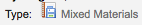
混搭 [MX]
記錄標示6 = p

音頻 [MU]
記錄標示6 = c
記錄標示6 = d
記錄標示6 = i
記錄標示6 = j

視覺資料 [VM]
記錄標示6 = g
記錄標示6 = k
記錄標示6 = r

特殊教學資料
記錄標示6 = o
處理館藏訂購
若打算匯入採訪中 (還沒有簽收) 的 MARC 資訊，且允許讀者預約它們，在匯入前需先新增館藏記錄於 *.mrc 檔案。
最簡單的方式是先經由 MARCEdit 軟體執行書目記錄。下載 MARC 記錄，儲存於桌面或其他地方。若已安裝 MARCEdit，則以滑鼠在 MARC 記錄點兩下，就可以打開該記錄。
重要
以下的畫面擷取自 Windows XP 下的 MARCEdit 版本 5.2.3769.41641，可能與現在的內容略有不同。
自動載入原始檔案；選擇 MarcBreaker，按下 “執行” 鈕

在螢幕下方將出現處理記錄的摘要

按 ‘編輯紀錄’ 繼續新增館藏紀錄
畫面出現 MARC 記錄

按工具 > 新增/編輯欄位

進入 Koha 的館藏資訊

在欄位盒鍵入 942
在欄位資料盒，鍵入 \\$c 及其館藏類型代碼 (在此例是 \\$cBOOK)
按 ‘插入最後’ 選項
按 ‘新增欄位’
鍵入館藏紀錄資料
在欄位盒，鍵入 952
在欄位資料盒，鍵入 $7ORDERED_STATUS$aPERM_LOC$bCURR_LOC$cSHELVING_LOCATION$eSOURCE_OF_ACQ$yITEM_TYPE
ex. $7-1$aCPL$bCPL$cNEW$eBrodart$yBOOK
安裝 Koha 時，-1 是訂購狀態的預設值
可以編修其他欄位的資料 – 如：改變館藏代碼，讓所有的館藏放在一起 (8)、自動填入採訪日期 (d)、填入公開附註 (z)。
使用 $ 做為分欄代碼；每列新增一個分欄讓多個館藏可以匯入 MARC 紀錄 (在上例中，四個館藏，各有對應的分欄)
確認在管理 > 容許值裡，在欄位鍵入正確的代碼
按 ‘插入最後’ 選項
按 ‘新增欄位’
關閉欄位編輯視窗
按檔案 > 進入 MARC 編輯

選定儲存檔案的位置
進入 Koha 系統，遵照 匯入 MARC 紀錄 <stage-marc-records-for-import-label> 的指示。
進入之後，到館藏記錄並分別修改其條碼，將把館藏狀態由訂購中改為不外借欄位的空白列。
注记
向代理商取得館藏記錄時，可要求代理商提供 MARC 記錄；這樣，才能夠匯入它，覆寫原來的記錄，並自動置換需要的資料。